МИНИСТЕРСТВО ТРАНСПОРТНОГО СТРОИТЕЛЬСТВА СССР
Утверждены Техническим управлением
Министерства транспортного строительства СССР
11 июля 1975 г.
ТЕХНИЧЕСКИЕ УКАЗАНИЯ
ПО ПРИГОТОВЛЕНИЮ И ПРИМЕНЕНИЮ
ДОРОЖНЫХ ЭМУЛЬСИЙ.
ВСН 115-75
МИНТРАНССТРОЙ
МОСКВА «ТРАНСПОРТ» 1976
Технические указания по приготовлению и применению дорожных эмульсий (ВСН 115-75). Минтрансстрой СССР. М., «Транспорт», 1976 г.
Технические указания составлены в развитие действующих СНиП III-Д.5-72 и СНиП III-Д.5-73, ГОСТ 18659-73 «Эмульсии дорожные битумные» и взамен «Указаний по приготовлению битумных эмульсий» (ВСН 115-65).
Технические указания содержат сведения о материалах, оборудовании и технологии приготовления дорожных эмульсий различных видов, методы их испытаний, рекомендации по выбору эмульсии для различных видов дорожно-строительных работ с учетом климатических и погодных условий, указания по технологии производства работ.
Технические указания разработаны на основании результатов лабораторных исследований и опытно-экспериментальных работ, выполненных за последние годы в Союздорнии и его филиалах, обобщения отечественного и учета зарубежного опыта приготовления эмульсий и использования их при строительстве автомобильных дорог в различных климатических условиях.
Технические указания составили кандидаты техн. наук И. А. Плотникова и Э. А. Казарновская (Союздорнии), М. Ф. Никишина, Н. И. Бегункова, А. П. Архипова, В. В. Назаров и инж. Г. А. Челухина (Ленинградский филиал Союздориии), канд. Техн. наук Б. М. Хавкин, инженеры К. В. Старцева, В. И. Жербечевский и И. И. Раб (Казахский филиал Союздорнии), канд. Хим. Наук Л. Ф. Ступакова (Среднеазиатский филиал Союздорнни).
Ил. 17, табл. 18.
|
Министерство транспортного строительства СССР |
Ведомственные строительные нормы |
ВСН 115-75 |
|
Минтрансстрой |
||
|
Технические указания по приготовлению и применению дорожных эмульсий |
Взамен Технических указаний по приготовлению дорожных эмульсий ВСН 115-65 |
1.1. Дорожные эмульсии - вяжущий и пленкообразующий материал, представляющий собой однородную маловязкую жидкость темно-коричневого цвета, состоящую из битума (или дегтя) и водного раствора эмульгатора. Дорожные эмульсии применяют для обработки минеральных материалов при устройстве конструктивных слоев дорожных одежд, для устройства защитных слоев с шероховатой поверхностью, ухода за свежеуложенным цементобетоном и цементогрунтом, закрепления откосов и подвижных песков, подгрунтовки под асфальтобетон и при ремонтных работах.
1.2. По структуре дорожные эмульсии делят на два типа: прямые и обратные. В прямых эмульсиях битум равномерно распределен в воде в виде мельчайших (размером 1 - 10 мк) капель, окруженных слоем эмульгатора. В обратных эмульсиях вода равномерно распределена в битуме (или дегте) в виде мельчайших капель, также стабилизированных слоем эмульгатора.
1.3. Прямые эмульсии по природе эмульгатора делят на три вида: анионные, катионные и пасты.
В анионных эмульсиях эмульгаторами являются мыла высокомолекулярных органических кислот, в катионных - органические азотосодержащие соединения, в пастах - минеральные порошкообразные материалы.
1.4. Основное различие между вышеуказанными видами эмульсий заключается во взаимодействии с обрабатываемыми материалами.
Анионные эмульсии активно взаимодействуют с основными (содержащими СаО) минеральными материалами, образуя на их поверхности водоустойчивую пленку. С кислыми (содержащими SiO2) породами анионные эмульсии взаимодействуют слабо, поэтому пленка вяжущего менее водоустойчива.
Катионные эмульсии активно взаимодействуют с основными и особенно с кислыми минеральными; материалами, образуя на поверхности зерен любых горных пород прочную и водоустойчивую пленку.
Пасты являются малоактивным вяжущим по отношению к любым горным породам.
|
Внесены Государственным всесоюзным дорожным научно-исследовательским институтом (Союздорнии) |
Утверждены Техническим управлением Министерства
транспортного строительства СССР приказом № 23 |
Срок введения |
1.6. Быстрораспадающиеся эмульсии распадаются в момент соприкосновения с обрабатываемым материалом. Предназначены для нанесения вяжущего тонким слоем на большие открытые поверхности путем, розлива (подгрунтовка, поверхностная обработка, уход за свежеуложенным цементобетоном или цементогрунтом). Для обработки минеральных материалов способом смешения эти эмульсии непригодны, так как из-за быстрого распада они не успевают обволакивать все зерна, и выделяющийся битум остается в смеси в виде крупных сгустков.
1.7. Среднераспадающиеся эмульсии распадаются несколько медленнее. Предназначены как для нанесения вяжущего тонким слоем путем розлива, так и для обработки щебня способом пропитки или смешения. Для обработки мелкозернистых минеральных материалов непригодны.
1.8. Медленнораспадающиеся эмульсии распадаются после того, как из пленки, нанесенной на обрабатываемый материал, начнет испаряться вода. Предназначены для обработки способом смешения минеральных материалов, содержащих мелкие фракции.
2.1. По величине вязкости и содержанию битума каждый класс анионных эмульсий подразделяется на марки:
класс БА (быстрораспадающихся) - БА-1 и БА-2;
класс СА (среднераспадающихся) - СА;
класс МА (медленнораспадающихся) - MA-l и МА-2.
2.2. Анионные эмульсии должны соответствовать требованиям, указанным в табл. 1 и пп. 2.3 - 2.6.
2.3. Эмульсии марок БА-1 и СА должны быть водоустойчивыми, т.е. выдерживать испытание водой в соответствии с п. 4.13.
2.4. Эмульсии должны быть однородными, т.е. остаток на сите с сеткой № 014 должен быть не более 0,5 %.
2.5. Эмульсии должны быть устойчивыми при транспортировании. При испытании встряхиванием (п. 4.14) эмульсии должны сохранять устойчивость не менее 2 ч.
Таблица 1
Требования к анионным эмульсиям (извлечение из ГОСТ 18659-73)
|
Нормы по маркам |
|||||
|
БА-1 |
БА-2 |
СА |
МА-1 |
МА-2 |
|
|
Скорость распада при смешении с цементом, мин |
Менее 5 |
3-10 |
Более 10 |
||
|
Содержание битума с эмульгатором, % |
55 - 60 |
45 - 54 |
55 - 60 |
51 - 55 |
40 - 50 |
|
Вязкость при 20°С по вискозиметру ВУ, град |
5 - 10 |
2 - 6 |
6 - 10 |
2 - 8 |
1,5 - 5 |
|
Вязкость при 20°С по вискозиметру для нефтяных битумов с отверстием 3 мм, с |
15 - 30 |
10 - 20 |
20 - 40 |
10 - 25 |
8 - 15 |
|
Устойчивость при хранении по остатку на сите с сеткой № 014, %, не более: |
|||||
|
через 7 сут |
0,8 |
0,7 |
0,8 |
0,8 |
0,7 |
|
через 30 сут |
1 |
1 |
1,2 |
1,2 |
1,2 |
2.6. Глубина проникания иглы и растяжимость битума, выделенного из эмульсии, не должны уменьшаться более чем на 15 % от соответствующих показателей битума, использованного для приготовления эмульсии.
2.7. Катионные эмульсии должны соответствовать требованиям, содержащимся в табл. 2.
Таблица 2
Требования к катионным эмульсиям
|
Наименование показателей |
Нормы |
Наименование показателей |
Нормы |
|
|
Скорость распада при смешении с кварцевым порошком, количество порошка, % |
Водоустойчивость пленки из эмульсии на гранитном щебне |
Хорошая |
||
|
Однородность по остатку на сите с сеткой № 014, % |
Не более 0,5 |
|||
|
быстрораспадающиеся |
Менее 50 |
|||
|
среднераспадающиеся |
50 - 100 |
|||
|
медленнораспадающиеся |
Более 100 |
Устойчивость при хранении по остатку на сите с сеткой № 063, %: |
||
|
Содержание битума с эмульгатором, % |
50 - 60 |
|||
|
Вязкость при 20°С по вискозиметру ВУ, град |
6 - 15 |
через 7 сут |
0,3 - 0,5 |
|
|
через 30 сут |
0,7 - 0,8 |
|||
|
Вязкость при 20°С по вискозиметру для нефтяных битумов с отверстием 3 мм, с |
20 - 50 |
Устойчивость при транспортировании по времени встряхивания, ч |
Не менее 2 |
|
2.8. Пасты должны соответствовать требованиям, содержащимся в табл. 3.
Таблица 3
Требования к пастам
|
Нормы |
Наименование показателей |
Нормы |
|
|
Содержание битума, % |
40 - 55 |
Однородность по остатку на сите с сеткой № 125 через сутки после приготовления пасты, %, не более |
2 |
|
Вязкость при 20°С по вискозиметру для нефтяных битумов с отверстием 5 мм, с |
5 - 20 |
Устойчивость при хранении по остатку на сите № 125, %, не более |
|
|
через 7 сут |
4 |
||
|
через 30 сут |
5 |
2.9. Содержание вяжущего в обратных эмульсиях должно быть в пределах 70 - 80 %.
2.10. По вязкости обратные эмульсии подразделяются на жидкие ЭО и вязкие ЭО-В. Вязкость при 60°С по вискозиметру для нефтяных битумов с отверстием 5 мм для ЭО должна быть в пределах 5 - 35, для ЭО-B - 35 - 130 с.
2.11. Эмульсии должны быть однородными. На стеклянной палочке, погруженной на 1 с в эмульсию, не должно быть заметных на глаз капелек или блестков воды.
2.12. Эмульсии не должны расслаиваться в течение 7 сут при положительной температуре окружающего воздуха.
2.13. В случае расслоения эмульсии после хранения более 7 сут как при положительной, так и при отрицательной температуре однородность ее должна восстанавливаться при перемешивании.
2.14. При смешивании эмульсии с влажным гранитным щебнем, предварительно обработанным известью, вяжущее должно покрывать поверхность щебня равномерно сплошной пленкой.
2.15. Сцепление эмульсии с гранитным щебнем, предварительно обработанным известью, должно быть хорошим или удовлетворительным.
А. Вяжущие
Количество битума в анионных, катионных эмульсиях и пастах назначают по табл. 1, 2 и 9 соответственно.
3.2. Для приготовления обратных эмульсий используют: дегти каменноугольные дорожные (ГОСТ 4641-74) марок Д-1, Д-2 и Д-3; битумы сланцевые дорожные (РСТ ЭССР 82-72) марок С-12/20, С-20/35, С-35/70, С-70/130; масло сланцевое топливное (ГОСТ 4806-66) и смеси нефтяных битумов марок БНД-40/60, БНД-60/90 и БНД-90/130 со сланцевым битумом или сланцевым маслом. Вид и количество вяжущего назначают по табл. 10.
3.3. При использовании смеси нефтяных битумов со сланцевыми битумами (или сланцевым маслом) соотношение между компонентами устанавливают из условия обеспечения необходимой вязкости (п. 2.10). При приготовлении смеси сланцевый битум (или сланцевое масло) вводят в обезвоженный и нагретый до 80 - 100°С нефтяной битум и тщательно перемешивают.
Б. Эмульгаторы для анионных эмульсий
3.4. В качестве эмульгаторов для анионных эмульсий используют поверхностно-активные вещества (ПАВ) - высшие органические кислоты (жирные, смоляные, нафтеновые, сульфонафтеновые) или их соли (мыла) (табл. 4).
Продукты, содержащие высшие органические кислоты, должны иметь число омыления в пределах 90 - 200 мг КОН на 1 г продукта.
Таблица 4
Перечень эмульгаторов для анионных эмульсий
|
Краткая техническая характеристика |
|
|
Асидол марки А-2 (ГОСТ 13302-67) |
Маслянистая жидкость темно-коричневого цвета, не растворяется в воде, но легко растворяется в щелочных растворах. Кислотное число 80 - 110 мг КОН на 1 г |
|
Асидол-мылонафт 1-го и 2-го сортов (ГОСТ 13302-67) |
Мазеобразное вещество от светло-желтого до коричневого цвета; представляет собой смесь нафтеновых кислот с их натриевыми солями. Кислотное число 150 - 180 мг КОН на 1 г |
|
Мылонафт 1-го и 2-го сортов (ГОСТ 13302-67) |
Мазеобразное вещество от светло-желтого до коричневого цвета; состоит в основном из натриевых солей нафтеновых кислот и воды. Содержит небольшое количество неомыляемых веществ и минеральных солей |
|
Синтетические жирные кислоты С20 и выше (кубовый остаток) (ГОСТ 8622-57) |
Продукт от твердой до мазеобразной консистенции, от светло- коричневого до темно-коричневого цвета. Состоит в основном из высокомолекулярных жирных кислот и некоторого количества других веществ. Кислотное число 70 - 120, число омыления 110-160 мг КОН на 1 г |
|
Нефтяные сульфокислоты марки КПг (контакт Петрова) (ГОСТ 463-53) |
Маловязкая жидкость от коричневого до черного цвета, содержит значительное количество сульфонафтеновых кислот и некоторое количество примеси, в том числе серную кислоту. Кислотное число 100 - 180 мг КОН на 1 г |
|
Окисленный петролатум (ТУ 38-1-238-69) |
Однородная паста коричневого цвета, нерастворима в воде. Кислотное число - не менее 50 мг КОН на 1 г, число омыления 110 - 115 мг КОН на 1 г |
|
Сульфатное мыло (СТУ-374-63) |
Мазеобразный продукт от желтого до темно-коричневого цвета. Содержит значительное количество натриевых солей смоляных и жирных кислот и некоторое количество других веществ. Хорошо растворяется в воде. |
|
Талловое масло сырое марок А и Б (МРТУ 13-05-13-65) |
Вязкая жидкость от темно-красного до темно-бурого цвета, содержит смесь смоляных и жирных кислот. Кислотное число 100 - 170, число омыления 130 - 180 мг КОН на 1 г |
|
Сосновая смола сырая марки В (ГОСТ 11238-65) |
Вязкая жидкость от светло-коричневого до темно-коричневого цвета. Содержит значительное количество смоляных кислот. Кислотное число 60 - 120, число омыления 70 - 170 мг КОН на 1 г |
|
Газогенераторная и топочная смола-мягчитель древеснопирогенная марок А и Б (МРТУ 13-05-15-65) |
Полужидкий продукт от темно-коричневого до черного цвета; содержит смоляные и другие высшие кислоты и фенолы. Число омыления смолы 120 - 200 мг КОН на 1 г |
|
Второй жировой гудрон (СТУ 30-9121-63) |
Полутвердый или вязкий продукт от коричневого до темно- коричневого цвета, состоит из жирных кислот, нейтрального жира и неомыляемых веществ. Кислотное число 40 - 100, число омыления 120 - 180 мг КОН на 1 г. |
|
Госсиполовая смола (ОСТ 18-114-73) |
Продукт, получаемый в виде кубового остатка (гудрон) при дистилляции жирных кислот, выделенных из хлопкового соапстока. Однородная, вязкотекучая масса от темно-коричневого до черного цвета. Кислотное число 50 - 100 мг КОН на 1 г |
3.5. Помимо ПАВ в состав эмульгатора для анионных эмульсий, как правило, вводят щелочные вещества: едкий натр (NaOH, ГОСТ 2263-71), жидкое стекло (ГОСТ 13078-67*), триполифосфат натрия (ГОСТ 13493-68*).
3.6. Вид и количество эмульгатора назначают по табл. 5, в зависимости от класса эмульсии. Количество эмульгатора не зависит от количества битума в эмульсии.
3.7. В эмульгаторах, содержащих воду, определяют ее количество в соответствии с п. 4.1.
3.8. В эмульгаторах - асидоле, асидол-мылонафте, нефтяных сульфокислотах - определяют кислотное число согласно п. 4.2.
3.9. В эмульгаторах - талловом масле, сосновой смоле, кубовых остатках синтетических жирных кислот, окисленном петролатуме, газогенераторной древесной смоле и втором жировом гудроне - определяют число омыления по п. 4.3.
3.10 Количество эмульгатора, необходимое для введения в воду или битум (см. табл. 5), уточняют с учетом воды, содержащейся в продукте, по формуле
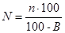
где N - количество эмульгатора, необходимое для приготовления эмульсии, %; п - количество эмульгатора, %, установленное по табл. 5; В - содержание воды в эмульгаторе, %.
3.11. Количество едкого натра А (в % от массы воды) рассчитывают пo формуле
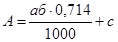
где а - кислотное число или число омыления эмульгатора в соответствии с пп. 4.2 и 4.3 (мг KOH на 1 г); б - количество эмульгатора, %, в соответствии с табл. 5; 0,714 - коэффициент пересчета молекулярного веса от едкого натра к едкому кали; с - избыток едкого натра в водном растворе эмульгатора, %, равный 0,2 - для газогенераторной и топочной древесной смолы, 0,4 - для госсиполовой смолы, 0,1 - 0,12 - для остальных эмульгаторов.
3.12. Водные растворы эмульгаторов: асидола, асидол-мылонафта, мылонафта, сульфатного мыла и нефтяных сульфокислот - приготовляют способом растворения эмульгатора и щелочного вещества (если оно входит в состав) в полной норме воды до рабочей концентрации. В воду, нагретую до температуры около 50°С, вводят щелочное вещество и эмульгатор (в количестве, соответствующем табл. 5, пп. 3.10 и 3.11), тщательно перемешивают до полного растворения, а затем подогревают раствор до 70 - 80°С.
Пример. Требуется приготовить 1 т раствора эмульгатора асидола марки А-2. Количество воды в асидоле - 3 %. Кислотное число асидола - 90 мг КОН на 1 г.
По табл. 5 назначаем количество асидола в растворе - 1,5 %, жидкого стекла 0,2 %, количество едкого натра рассчитываем по формуле (2)
Пересчитываем количество асидола с учетом содержащейся в нем воды по формуле (1)
.
Таким образом, на 1 т раствора необходимо: 15,5 кг асидола, 2 кг жидкого стекла, 2 кг едкого натра, 980,5 кг воды. Воду заливают в емкость, нагревают до 70 - 80°С, затем вводят в нее вышеуказанные количества асидола, жидкого стекла и едкого натра, перемешивают до полного растворения.
Таблица 5
Составы эмульгаторов для анионных эмульсий
|
Количество вещества, вводимое в воду, % от массы воды |
Количество вещества, вводимое в битум, % от массы битума |
|
|
Быстрораспадающиеся эмульсии |
||
|
Асидол марки А-2 |
1 - 1,5 |
- |
|
Едкий натр |
Рассчитывают по п. 3.11 |
- |
|
Жидкое стекло |
0,2 |
- |
|
Асидол-мылонафт 1-го и 2-го сортов |
2 - 2,5 |
|
|
Едкий натр |
0,1 |
- |
|
Мылонафт 1-го и 2-го сортов |
2 - 2,5 |
- |
|
Едкий натр |
0,1 - 0,12 |
- |
|
Сульфатное мыло |
1 - 1,5 |
- |
|
Едкий натр |
0,1 - 0,12 |
- |
|
Талловое масло сырое марок А и Б |
1 - 1,5 |
- |
|
Едкий натр |
Рассчитывают по п. 3.11 |
- |
|
Сосновая смола сырая марки В (сухоперегонная) |
1 - 1,5 |
- |
|
Едкий натр |
Рассчитывают по п. 3.11 |
- |
|
Госсиполовая смола |
- |
2 - 4,5 |
|
Едкий натр |
0,3 - 0,4 |
|
|
Окисленный петролатум |
- |
2 - 3 |
|
Едкий натр |
Рассчитывают по п. 3.11 |
|
|
Синтетические жирные кислоты С20 и выше (кубовый остаток) |
- |
1,5 - 3,5 |
|
Едкий натр |
Рассчитывают по п. 3.11 |
|
|
Среднераспадающиеся эмульсии |
||
|
Талловое масло сырое марок А и Б |
2 - 2,5 |
- |
|
Едкий натр |
Рассчитывают по п. 3.11 |
|
|
Сульфатное мыло |
2 - 3 |
- |
|
Едкий натр |
0,2 - 0,3 |
|
|
Нефтяные сульфокислоты марки КПг (контакт Петрова) |
1,2 - 1,4 |
- |
|
Едкий натр |
Рассчитывают по п. 3.11 |
|
|
Синтетические жирные кислоты С20 и выше (кубовый остаток) |
- |
3 - 3,5 |
|
Триполифосфат натрия |
1,5 - 2 |
|
|
Второй жировой гудрон |
6 - 7 |
|
|
Триполифосфат натрия |
1,5 - 2 |
|
|
Госсиполовая смола |
4,5 - 5 |
|
|
Едкий натр |
0,4 - 0,5 |
|
|
Медленнораспадающиеся эмульсии |
||
|
Газогенераторная и топочная смола - мягчитель древеснопирогенный марок А и В |
3,5 |
- |
|
Едкий натр |
Рассчитывают по п. 3.11 |
|
|
Нефтяные сульфокислоты марки КПг (контакт Петрова) |
2,4 - 2,6 |
- |
|
Едкий натр |
Рассчитывают по п. 3.11 |
|
|
Госсиполовая смола |
8 - 10 |
3-5 |
|
Едкий натр |
Рассчитывают по п. 3.11 |
|
|
Второй жировой гудрон |
- |
8 - 10 |
|
Триполифосфат натрия |
2 |
|
Примечание. Эмульгаторы - второй жировой гудрон, синтетические жирные кислоты (кубовый остаток) и госсиполовую смолу рекомендуется использовать только в III - V дорожно-климатических зонах.
3.13. Водные растворы эмульгаторов: сосновой смолы, таллового масла, госсиполовой смолы, газогенераторной древесной смолы получают путем предварительного приготовления концентрата (мыла) из эмульгатора, щелочного вещества и части воды с последующим разбавлением его остальным количеством воды до рабочей концентрации. В емкость для приготовления мыла загружают эмульгатор в количестве, соответствующем табл. 5 и п. 3.10, заливают 2,5-кратным количеством воды, затем добавляют едкий натр в количестве, соответствующем п. 3.11. Смесь эмульгатора, щелочи и воды кипятят 1 - 2 ч при периодическом перемешивании, пока она не станет однородной. Готовое мыло разбавляют водой до рабочей концентрации.
Пример. Требуется приготовить 1 т раствора эмульгатора из газогенераторной древесной смолы для получения медленнораспадающейся эмульсии. Количество воды в смоле - 24,5 %. Число омыления смолы - 180 мг КОН на 1 г.
По табл. 5 назначаем количество смолы в растворе 3,5 %, количество едкого натра рассчитываем по формуле (2)
Пересчитываем количество смолы с учетом содержащейся в ней воды по формуле (1)
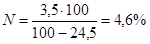
Таким образом, на 1 т водного раствора эмульгатора необходимо 46 кг древесной смолы, 6,5 кг едкого натра
В емкость для приготовления раствора загружают смолу, заливают воду в 2,5-кратном количестве, т.е. 46·2,5=115 кг, затем вводят едкий натр и кипятят 1 - 2 ч при периодическом перемешивании. Готовое мыло разбавляют водой до 1 т (1000 л по объему).
3.14. Водные растворы анионных эмульгаторов рабочей концентрации независимо от способа приготовления должны быть щелочными, т.е. иметь водородный показатель рН в пределах 9 - 12 (определение, рН см. п. 4.4). Если рН готового раствора меньше указанных значений, необходимо добавить в раствор едкий натр.
3.15. Эмульгаторы, которые надо вводить не в воду, а в битум, предварительно отвешивают в количестве, соответствующем табл. 5, и загружают в битумный котел к моменту окончания обезвоживания битума. Для равномерного распределения эмульгатора необходимо перемешивать битум. Битум с эмульгатором не рекомендуется держать в нагретом состоянии более суток. При этом способе введения ПАВ щелочное вещество в необходимом по составу количестве растворяют в воде.
В. Эмульгаторы для катионных эмульсий
3.16. В качестве эмульгаторов для катионных эмульсий используют ПАВ типа аминов, диаминов, полиаминов и четвертичных аммониевых солей (табл. 6).
3.17. Помимо ПАВ в состав эмульгаторов для катионных эмульсий вводят соляную кислоту (ГОСТ 3118-67).
3.18. Вид и количество эмульгатора назначают по табл. 7 в зависимости от класса эмульсии. Количество эмульгатора не зависит от концентрации битума в эмульсии.
Таблица 6
Перечень эмульгаторов для катионных эмульсий
|
Краткая техническая характеристика |
|
|
Битумная присадка БП 3 |
Твердообразная паста светло-коричневого цвета. Температура каплепадения не выше 65°С Основность не менее 25 мл 0,1Н раствора НСl или 150 мг КОН на 1 г. Хорошо растворима в битуме. Активное вещество полиэтиленполиамин. |
|
Амины С17 - С20 |
Белый с желтым оттенком воскообразный продукт. Температура плавления 50 - 55°С Основность не менее 25 мл 0,1Н раствора НС1 или 150 мг КОН на 1 г Хорошо растворимы в битуме Содержание первичных аминов не менее 70 %. |
|
Четвертичные соли аммония (например, алкилтриметиламмоний хлорид - ATM) |
ATM выпускается в виде 50 - 60 % раствора в изопропиловом спирте. Хорошо растворим в воде |
Таблица 7
Составы эмульгаторов для катионных эмульсий
|
Количество вещества, вводимое в воду, % от массы воды |
Количество вещества, вводимое в битум, % от массы битума |
|
|
Быстрораспадающиеся эмульсии |
||
|
АТМ |
0,5 - 1 |
- |
|
Соляная кислота |
0,2 |
- |
|
Амины C17 - С20 |
- |
1 - 2 |
|
Соляная кислота |
Рассчитывают по п. 3.22 |
- |
|
Среднераспадающиеся эмульсии |
||
|
ATM |
2 |
- |
|
Соляная кислота |
0,2 |
- |
|
БП-3 |
- |
2 |
|
Соляная кислота |
Рассчитывают по п. 3.22 |
- |
|
Медленнораспадающаяся эмульсия |
||
|
БП-3 |
||
|
Соляная кислота |
Рассчитывают по п. 3.22 |
|
3.19. Катионные эмульгаторы вводят в воду или битум в соответствии с табл. 7. Соляную кислоту всегда вводят только в воду.
3.20. Количество эмульгатора для введения в воду или битум, установленное по табл. 7, уточняют по концентрации основного вещества в продукте, указанной в паспорте, по формуле
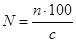
где N - количество эмульгатора, необходимое для приготовления эмульсии, %; п - количество эмульгатора, %, установленное по табл. 7; с - концентрация основного вещества в продукте, %.
3.21. Для каждой партии соляной кислоты необходимо устанавливать концентрацию путем измерения ореометром (денсиметром) удельного веса (табл. 8).
Таблица 8
Удельный вес соляной кислоты при различной концентрации
|
Концентрация НСl, % |
Удельный вес соляной кислоты, г/см3 |
Поправочный коэффициент |
Концентрация НС1, % |
Удельный вес соляной кислоты, г/см3 |
Поправочный коэффициент |
|
20 |
1,098 |
1,784 |
30 |
1,149 |
1,197 |
|
22 |
1,108 |
1,614 |
32 |
1,159 |
1,113 |
|
24 |
1,119 |
1,486 |
34 |
1,169 |
1,052 |
|
26 |
1,129 |
1,366 |
36 |
1,179 |
1,000 |
|
28 |
1,139 |
1,279 |
38 |
1,189 |
0,951 |
|
40 |
1,198 |
0,905 |
3.22. Количество соляной кислоты, необходимое для введения в воду при использовании эмульгаторов БП-3 и аминов, рассчитывают по формуле
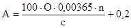
где А - количество соляной кислоты, % от массы воды; О - основность эмульгатора (в соответствии с п. 4.2а), мл 0,1Н раствора НСl; 0,00365 г-экв 0,1Н раствора НСl; п - количество эмульгатора, %, установленное по табл. 7; с - концентрации НСl, %.
Примечание. Если основность эмульгатора дана в мг КОН на 1 г, то для перевода в мл 0,1 раствора НСl этот показатель следует разделить на 5,61 (титр 0,1Н раствора НСl, выраженный в КОН).
Пример. Требуется приготовить 1 т водного раствора соляной кислоты для получения эмульсии с 3 % БП-3. Соляная кислота имеет удельный вес 1,179 г/см3, следовательно, концентрация ее (по табл. 8) 36 %. Основность БП-3 41,15 0,1Н раствора. НСl (или 232,5 мг КОН на 1 г). По формуле (4) находим необходимое количество соляной кислоты
.
Следовательно, на 1 т водного раствора необходимо 14,6 кг или 12,4 л (14,6׃1,179) соляной кислоты.
3.23. Количество соляной кислоты, необходимой для введения в раствор эмульгатора при использовании ATM, устанавливают по табл. 7. Нормы расхода кислоты, указанные в табл. 7, относятся к кислоте 36 %-ной концентрации; с удельным весом 1,179. При наличии кислоты другой концентрации ее количество корректируют, по табл. 8.
Например, нужно добавить 2,5 кг соляной кислоты с удельным весом 1,179, а имеется кислота с удельным весом 1,129, тогда ее нужно добавить в количестве 2,5 кг·1,366=3,42 кг.
3.24. Эмульгаторы БП-3 и амины вводят в битум, разогретый до рабочей температуры (п. 3.25), в количестве, соответствующем табл. 7, и растворяют в нем при перемешивании. Битум с эмульгатором не рекомендуется держать в нагретом состоянии более 8 ч.
3.25. Эмульгатор ATM вводят в воду, приготовляя раствор следующим образом: в нагретую до температуры 65 - 75°С воду вводят ATM и соляную кислоту в количестве, соответствующем табл. 7 и п. 3.23, и тщательно перемешивают до полного растворения ATM. Готовый раствор должен иметь водородный показатель рН в пределах 1,8 - 2,2.
Значения рН меньше 1,8 свидетельствуют об избытке кислоты, что отрицательно влияет на адгезию эмульгированного битума, более 2,2 - о недостатке кислоты, что ухудшает условия эмульгирования битума.
3.26. Растворы эмульгаторов и кислот приготовляют непосредственно перед их использованием в емкостях, снабженных плотно закрывающимися крышками.
Г. Эмульгаторы для паст
3.27. В качестве эмульгаторов для паст рекомендуются: известь (пушонка или молотая кипелка), содержащая не менее 60 % окисей кальция СаО и магния MgO, фильтрпрессная грязьдефекат - отходы сахарного производства, хранившиеся в отвалах не более 1 года и содержащие не менее 80 % частиц мельче 0,071 мм (табл. 9).
Таблица 9
Составы паст
|
Количество веществ, % |
|
|
Известь молотая кипелка |
8 - 12 |
|
Вода |
42 - 33 |
|
Битум |
50 - 55 |
|
Известь-пушонка |
15 - 20 |
|
Вода |
40 - 30 |
|
Битум |
45 - 50 |
|
Фильтрпрессная грязь |
25 - 30 |
|
Вода |
35 - 20 |
|
Битум |
40 - 50 |
Д. Эмульгаторы для обратных эмульсий
3.28. Эмульгаторами для обратных эмульсий являются фенолы, содержащиеся в вяжущем. Количества фенолов в сланцевых битумах или сланцевых маслах достаточно для получения эмульсий.
В дегтях определяют количество фенолов по п. 4.5. При содержании фенолов менее 5 % в деготь необходимо добавить: фенолы каменноугольные технические (ГОСТ 11311-65) или фенолы каменноугольные жидкие (ГОСТ 5361-62) в недостающем количестве, или контакт Петрова керосиновый (ГОСТ 463-53) в удвоенном количестве. Помимо фенолов в состав эмульгатора для обратных эмульсий входят едкий натр и поваренная соль (табл. 10).
Таблица 10
Составы обратных эмульсий
|
Наименование вяжущего |
Состав эмульсии, % |
||||
|
Вяжущее |
Едкий натр |
Поваренная соль |
Вода |
||
|
ЭО |
Дегтя каменноугольные |
70 - 80 |
1 |
2 - 5 |
27 - 14 |
|
ЭО |
Битумы сланцевые (или масло сланцевое) |
70 - 80 |
1 |
2 - 5 |
27 - 14 |
|
ЭО-В |
Битумы нефтяные |
28 - 32 |
1 |
2 - 5 |
27 - 14 |
|
Битумы сланцевые (или масло сланцевое) |
42 - 48 |
||||
Максимальное количество поваренной соли назначают, если работы ведутся при температуре ниже +10°С или материал, обработанный обратной эмульсией, хранят в штабеле.
Е. Вода
3.29. Для приготовления анионных быстро- и среднераспадающихся эмульсий применяют мягкую воду с показателем жесткости не выше 3 мг-экв/л, а для медленнораспадающихся - воду средней жесткости - не выше 6 мг-экв/л.
3.30. Для приготовления катионных обратных эмульсий и паст жесткость используемой воды не ограничивается.
3.31. Битумные эмульсии приготовляют на стационарных или полустационарных эмульсионных установках.
Стационарные эмульсионные установки (приложение 1) обычно размещают на территории существующих АБЗ, что дает значительную экономию средств за счет полного или частичного использования имеющегося пароводяного, энергетического, складского хозяйства, битумоварочного оборудования, лабораторных, производственных и служебных, построек. Однако возможны случаи, когда целесообразно строить эмульсионные установки как самостоятельные производства.
Полустационарные эмульсионные установки (приложение 2) используют в тех случаях, когда необходимо обеспечить эмульсией значительный объем работ при их подвижном фронте.
3.32. Основным технологическим узлом установок являются эмульсионные машины (приложение 3), которые могут быть непрерывного или периодического действия (табл. 11).
Таблица 11
Характеристика эмульсионных машин
|
Производительность, т/ч |
Мощность электродвигателя кВт |
Принцип действия |
Назначение |
|
|
Многодисковый диспергатор ЭМ-25 |
25 |
14 |
Непрерывный |
Для прямых эмульсий |
|
Многощелевой диспергатор |
5 - 7 |
7,5 |
» |
То же |
|
Акустический диспергатор |
1 |
4,5 |
Периодический |
» |
|
Лопастная мешалка |
3 |
2,8 |
» |
Для обратных эмульсий и паст |
Для приготовления битумных паст, кроме лопастных мешалок, рекомендуются асфальтобетонные смесители, растворо- и бетономешалки принудительного перемешивания, выпускаемые серийно отечественной промышленностью (приложение 4).
3.33. Кроме эмульсионной машины, базы должны иметь дополнительное оборудование, котлы для обезвоживания и разогрева битума, котел для варки мыла, резервуары для растворения едкого натра, мешалку для приготовления водного раствора эмульгатора, расходные резервуары для эмульгатора, водоумягчительную установку, насосы, дозаторы и др.
3.34. Процесс приготовления эмульсий заключается в объединении в эмульсионной машине битума и водного раствора эмульгатора, дозируемых в определенных соотношениях.
3.35. При приготовлении прямых эмульсий температура нефтяного битума, поступающего в эмульсионную машину, должна быть в пределах:
БНД-40/60 …………………………………………………………………. 140 - 150°С
БНД-60/90 и БНД-90/130 ………………………………………………… 120 - 140°С
БНД-130/200 ………………………………………………………………. 100 - 120°С
БНД-200/300 .……………………………………………………………….. 90 - 100°С
3.36. Температура водного раствора эмульгатора, поступающего в эмульсионную машину, должна быть в пределах 60 - 80°С.
3.37. Температуру битума и раствора эмульгатора следует назначать таким образом, чтобы сумма этих двух температур не превышала 200°С. В противном случае может произойти вспенивание смеси битума и раствора эмульгатора и выбрасывание ее из эмульсионной машины.
3.38. При приготовлении эмульсии в машине непрерывного действия сперва прогревают машину, краны и трубопроводы, затем включают двигатель и подают водный раствор эмульгатора. После того как раствор заполнит эмульсионную машину и станет вытекать из выходного отверстия, начинают подачу битума. Отрегулировав подачу битума и раствора эмульгатора в соотношении, обеспечивающем нужную концентрацию эмульсии, отключают обогрев кожуха машины.
3.39. Учитывая неточность объемной дозировки компонентов при непрерывном процессе получения эмульсии, рекомендуется подавать битум в количестве, несколько большем требуемого, с тем, чтобы окончательно откорректировать концентрацию эмульсии в емкости для готовой продукции путем разбавления раствором эмульгатора, количество которого рассчитывают по формуле
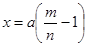
где х - количество раствора эмульгатора, необходимого для разбавления эмульсии, т; а - количество эмульсии, подлежащей разбавлению, т; т - концентрация эмульсии, подлежащей разбавлению, %; п - требуемая концентрация эмульсии, %.
3.40. В течение всего процесса приготовления эмульсии температура битума, поступающего в машину, должна быть строго постоянной, в противном случае будет изменяться скорость его истечения через дозировочные вентили (или другие объемные дозирующие устройства), что вызовет изменение концентрации эмульсии.
3.41. Температура готовой эмульсии, выходящей из эмульсионной машины, должна быть не выше 90°С.
3.42. При приготовлении эмульсии в машине периодического действия - акустическом диспергаторе - количество раствора эмульгатора и битума, необходимое для одного цикла, предварительно рассчитывают с учетом: емкости бака диспергатора; получения эмульсии требуемой концентрации; заполнения бака настолько, чтобы гидродинамический преобразователь (вибратор) был полностью погружен в жидкость.
В прогретый бак диспергатора заливают отмеренный объемным дозатором раствор эмульгатора и включают насос для циркуляции этого раствора через вибратор. После установившегося колебательного движения пластины вибратора из второго объемного дозатора начинают подавать битум со скоростью 30 - 40 л/мин. После подачи всей порции битума циркуляцию продолжают еще 5 - 7 мин, затем откачивают образовавшуюся эмульсию из бака и цикл повторяют.
3.43. Приготовив анионную эмульсию, эмульсионную машину промывают раствором эмульгатора, затем горячей водой.
3.44. Закончив приготовление катионной эмульсии, во избежание коррозии металла, необходимо промыть горячей водой оборудование, через которое проходят водные растворы (емкость для приготовления эмульгатора, дозировочный бачок, диспергатор, трубопроводы и насосы).
Наибольшую опасность для металла представляет соляная кислота как в концентрированном, так и в разбавленном виде. Катионные эмульгаторы являются ингибиторами коррозии, поэтому их водные растворы, даже если в их состав входит соляная кислота, существенной коррозии не вызывают. Готовая катионная эмульсия металл не разрушает.
3.45. При приготовлении обратных вязких эмульсии ЭО-В предварительно составленную смесь из нефтяного битума и сланцевого битума или сланцевого масла (п. 3.3) нагревают до температуры 60 - 80°С, водный раствор едкого натра и поваренной соли нагревают до 30 - 40°С.
При приготовлении обратных жидких эмульсий ЭО вяжущее нагревают в зависимости от вязкости до 20 - 60°С. Температуру вяжущего назначают из условия подачи его в мешалку насосом. Водный раствор соли и едкого натра не подогревают. Прогревают лопастную мешалку, краны, трубопроводы и дозаторы. Вяжущее и водный раствор заливают в дозаторы в количестве, соответствующем табл. 10. Сперва в мешалку подают вяжущее, затем при непрерывном перемешивании со скоростью лопастей 60 - 80 об/мин подают водный раствор. Окончив подачу раствора, перемешивают еще 5 - 8 мин. Готовую эмульсию сливают в хранилище или в расходную емкость через отверстие в дне мешалки, и цикл повторяют.
3.47. Производственный контроль при приготовлении эмульсий подразделяется на периодический и текущий.
При периодическом контроле для каждой качественно новой партии исходных материалов и каждого нового состава эмульсии (но не реже чем 1 раз на каждые 500 - 600 т битумной эмульсии) проверяют: свойства вяжущего, используемого для приготовления эмульсии; свойства эмульгатора (пп. 4.1 - 4.6); свойства эмульсии в соответствии с табл. 1 и 2 и пп. 2.3 - 2.15.
При текущем контроле ежедневно для каждой партии эмульсии (в количестве не более 15 т) проверяют:
точность дозирования компонентов эмульгатора при приготовлении водных растворов или введении ПАВ в битум;
водородный показатель рН водных растворов эмульгатора;
температуру битума и раствора эмульгатора, поступающих в эмульсионную машину, температуру готовой эмульсии, вытекающей из машины (непрерывный контроль - автоматический);
качество эмульсии путем погружения стеклянной палочки в готовую эмульсию (периодическая визуальная оценка). При хорошем качестве эмульсии палочка покрывается однородной темно-коричневой пленкой. Не допускается в пленке комочков или нитей битума;
концентрацию битума в готовой эмульсии.
3.48. Каждую партию эмульсии, направляемую на место производства работ, сопровождают паспортом, в котором указывают: наименование и адрес предприятия-изготовителя; номер и дату составления паспорта; вид, класс и марку эмульсии, состав эмульгатора; результаты испытаний (глубина проникания иглы битума, использованного для приготовления эмульсии, содержание битума, вязкость эмульсии); дату приготовления эмульсии; срок хранения.
3.49. Эмульсии можно хранить на месте их приготовления и на месте строительства. В обоих случаях лучшим способом является хранение в вертикальных цилиндрических емкостях. Не рекомендуется хранить эмульсии в емкостях прямоугольного сечения во избежание скопления битума в углах емкости.
3.50. Емкости для эмульсии должны быть чистыми; перед наполнением их следует промыть горячей водой или обработать паром. Во избежание загрязнения битумной эмульсии, испарения из нее воды, а также попадания дождя емкости должны плотно закрываться.
3.52. Наполнять емкость и отбирать из нее эмульсии следует снизу. При необходимости наполнения сверху конец сливного патрубка (шланга) опускают в глубь эмульсии, чтобы не допускать пенообразования или распада заливаемой эмульсии вследствие ударов ее о поверхность эмульсии, находящейся в емкости.
3.53. Срок хранения анионной эмульсии классов БА и СА не более 1 мес. при температуре воздуха не ниже 0°С; эмульсии класса МА - не более 2 мес. при температуре воздуха не ниже -4°С. Катионную эмульсию можно хранить не более 3 мес. при температуре воздуха не ниже 3°С.
3.54. При длительном (в течение 2 недель и более) хранении допускается некоторое расслоение эмульсии, т.е. изменение концентрации битума по высоте емкости без образования не размешиваемых комков и сгустков. Длительно хранившуюся эмульсию перед использованием необходимо тщательно перемешать.
3.55. Пасты можно хранить в течение 6 мес. при температуре воздуха до -15°С. При хранении паста оседает и уплотняется, поэтому перед применением ее необходимо перемешивать. Во избежание пересыхания пасты над ее поверхностью должен быть постоянный слой воды 2 - 5 см.
3.56. Обратные эмульсии разрешается хранить без потери качества в течение недели при температуре воздуха до -5°С. Обратные вязкие эмульсин хранят в обогреваемых емкостях.
3.57. Для транспортирования эмульсий могут быть использованы автогудронаторы, битумовозы, железнодорожные цистерны, цистерны емкостью 1 - 2 т, смонтированные на грузовых автомобилях, металлические бочки емкостью от 100 до 500 л. При наполнении транспортных средств следует соблюдать требования пп. 3.51 - 3.53.
При наполнении транспортных средств эмульсию следует пропускать через сетчатый фильтр с размером отверстий 3 мм, надетый на заборный конец шланга.
3.58. Для транспортирования паст могут быть использованы: автомобили-самосвалы, ящики или бочки, не пропускающие воду.
4.1. Определение содержания воды. Метод заключается в отгоне воды из смеси испытуемого материала с растворителем по ГОСТ 2477-65. При испытании применяют: аппарат для количественного определения содержания воды в нефтяных, пищевых и других продуктах (рис. 1); растворители - обводненный толуол, насыщенный осветительный керосин фракции, выкипающей до 200°С, или бензин марки «Галоша»; пемзу, неглазурованный фаянс или запаянные с одной стороны капилляры.
В предварительно промытую и хорошо высушенную стеклянную колбу объемом 500 мл помещают 10 - 30 г эмульгатора, отвешенного на технических весах с точностью до 0,01 г, прибавляют отмеренные цилиндром 100 мл растворителя и тщательно перемешивают. В колбу бросают несколько кусочков неглазурованного фаянса, пемзы или несколько капилляров. Колбу нагревают на электроплитке с закрытой спиралью и ведут перегонку так, чтобы из косо срезанного конца трубки холодильника в приемник-ловушку падали две - четыре капли в секунду. Перегонку прекращают, как только объем воды в приемнике-ловушке перестает увеличиваться, а верхний слой растворителя станет совершенно прозрачным.
Рис. 1; Прибор Дина-Старка для определения содержания воды:
1 - колба; 2 - холодильник; 3 - приемник-ловушка
Если в конце перегонки в трубке холодильника задерживаются капли воды, то их смывают в приемник-ловушку сконденсировавшимся растворителем, увеличив для этого на непродолжительное время интенсивность кипячения, или сталкивают стеклянной палочкой с резиновым наконечником.
После прекращения нагревания дают прибору остыть до комнатной температуры. Если в приемнике-ловушке собралось немного воды (до 0,3 мл) и растворитель мутен, то приемник-ловушку помещают на 20 - 30 мин в горячую воду для осветления и снова охлаждают до комнатной температуры. Длительность перегонки с толуолом и бензином составляет примерно 2 - 4 ч, с керосином - 3 - 5 ч. Содержание воды вычисляют по формуле
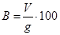
где V - объем воды, в приемнике-ловушке, мл; g - навеска эмульгатора, г.
Расхождение между двумя параллельными определениями не должно превышать одного деления приемника-ловушки. Если в приемнике-ловушке 0,03 мл воды, то это считается следами.
Перед анализом сосуд с пробой закрывают пробкой со вставленным в нее обратным холодильником и нагревают на водяной бане до полного расплавления аминов и удаления аммиака (около 2 ч). Испытание проводят по МРТУ 602-380-66 (амины алифатические) следующим образом: к навеске 0,5 - 0,8 г пробы, взятой на аналитических весах, прибавляют 20 мл хлороформа, растворяют ее при нагревании до 50 - 60°С, добавляют 20 мл метилового (этилового) спирта, опускают в раствор электроды, включают мешалку для перемешивания и титруют 0,1Н раствором соляной кислоты в изопропиловом спирте потенциометрически. Окончив титрование, строят график зависимости ЭДС (mV) от расхода титрана, по которому находят резкое изменение ЭДС, соответствующее точке эквивалентности (середину).
Общую основность в мл 0,1Н раствора НСl на 1 г пробы вычисляют по формуле
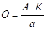
где А - объем 0,1Н раствора кислоты, пошедший на титрование пробы, мл; К - коэффициент нормальности 0,1Н раствора кислоты; а - навеска пробы, г.
4.2. Определение кислотного числа. Кислотное число выражается числом миллиграммов едкого кали, необходимого для нейтрализации свободных кислот, содержащихся в одном грамме испытуемого эмульгатора.
Для определения кислотного числа светлых эмульгаторов применяют визуальный метод (ГОСТ 5985-59). Для темно-окрашенных эмульгаторов этот метод непригоден, так как цвет индикаторов, используемых при титровании, маскируется окраской самих продуктов; в этом случае применяют потенциометрический метод.
Визуальный метод заключается в следующем: навеску 0,5 - 0,8 г хорошо перемешанного эмульгатора, взятую на аналитических весах, помещают в колбу объемом 250 мл и растворяют в смеси из этилового спирта с бензолом (1׃2). Полученный раствор титруют 0,1Н спиртовым раствором едкого кали (КОН) в присутствии 0,1 %-ного раствора фенолфталеина, окраска которого переходит от бесцветной к розовой.
Расчет производят на безводный продукт по формуле
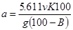
где а - кислотное число, мг КОН на 1 г; 5,611 - количество едкого кали, содержащегося в 1 мл 0,lH раствора, мг; v - количество 0,1H раствора КОН, израсходованное на титрование пробы, мл; К - поправка к титру 0,1Н раствора КОН; g - навеска эмульгатора, г; В - содержание воды в эмульгаторе, %.
Расхождения между параллельными определениями не должны превышать ±5 % от среднего арифметического сравниваемых результатов.
Для определения кислотного числа потенциометрическим методом используется потенциометр рН=метр любой конструкции со стеклянным и каломельным электродами. Прибор подготавливают в соответствии с инструкцией по эксплуатации потенциометров с дополнениями по ГОСТ 11362-65.
Навеску 0,25 - 0,5 г хорошо перемешанного эмульгатора, отвешенную на аналитических весах, помещают в стакан объемом 100 - 150 мл и растворяют в смеси этилового спирта с бензолом (1׃2). Стакан с раствором помещают на магнитную мешалку, опускают в раствор электроды (на глубину 10 - 12 мм) и магнит для перемешивания раствора. Титруют 0,1Н спиртовым раствором едкого кали. Фиксируют первоначальное значение показателя реакции среды рН и каждое последующее после добавки титрованного раствора. Титрование ведут медленно до величины рН не более 11; титрованный раствор добавляют порциями по 0,1 мл только после того, как стрелка рН-метра примет устойчивое положение. Кислотное число рассчитывают по формуле (8), определив предварительно расчетным или графическим интерполированием значение v, соответствующее рН - 11,0.
Для определения числа омыления светлых эмульгаторов применяют визуальный метод по ГОСТ 6764-63. Навеску эмульгатора 1 - 2 г, отвешенную на аналитических весах, помещают в коническую колбу объемом 250 мл, доливают 25 мл 0,5Н спиртового раствора едкого кали и кипятят с обратным холодильником в течение 1,5 - 2 ч. Одновременно в тех же условиях и такой же колбе кипятят такую же смесь из бензола со спиртовым раствором едкого кали, но без навески (слепой опыт). После прекращения нагревания промывают трубку холодильника 3 - 5 мл нейтрализованного этилового спирта и дают стечь в течение 1 - 2 мин. В обе колбы добавляют по 3 - 8 капель 0,1 %-ного раствора фенолфталеина и титруют содержимое 0,5Н спиртовым раствором соляной кислоты (НСl) до исчезновения окраски. Обе колбы оставляют на 30 с, слегка помешивая их содержимое несколько раз. Отсутствие окрашивания в течение этого времени указывает на конец титрования.
Расчет выполняют на безводный продукт по формуле
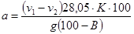
где а - число омыления, мг КОН на 1 г; v1 - количество 0,5Н раствора HCl, израсходованного на титрование щелочи в слепом опыте, мл; v2 - количество того же раствора, израсходованного на титрование свободной щелочи в основном опыте, мл; 28,05 - титр 0,5Н HCl, выраженный в мг КОН; K - поправка к титру 0,5Н раствора НС1; g - навеска эмульгатора; В - содержание воды в эмульгаторе, %.
Расхождение между параллельными определениями числа омыления не должно превышать ±5 % от среднего арифметического сравниваемых результатов.
Для определения числа омыления темноокрашенных эмульгаторов пользуются потенциометрическим методом. Потенциометр рН-метр любой конструкции со стеклянным и каломельным электродами подготавливают в соответствии с инструкцией по эксплуатации потенциометров с дополнениями по ГОСТ 11362-65. Навеску эмульгатора 0,25 - 0,5 г помещают в широкогорлую колбу объемом 150 мл. Далее навеску обрабатывают так, как при визуальном методе. В такой же колбе делают слепой опыт. Перед титрованием каждую из колб помещают на магнитную мешалку, Опускают в раствор электроды потенциометра (на глубину 10 - 12 мм) и магнит для перемешивания раствора и отмечают первоначальное значение рН.
Титрование проводят обратное, т.е. в контрольную и рабочую пробы вводят 25 мл 0,5Н спиртового раствора HCl, а затем оттитровывают 0,5Н раствором КОН до рН более 10. Титрование ведут медленно, добавляя титрованный раствор порциями по 0,1 мл, причем каждую последующую порцию титрана добавляют только после того, как стрелка pH-метpa примет устойчивое положение.
Число омыления рассчитывают на сухое вещество по формуле
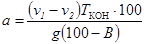
где v1 - количество 0,5Н раствора КОН, израсходованное на титрование рабочей пробы, мл; v2 - количество того же раствора КОН, израсходованное на титрование слепого опыта, мл; Tкон - титр 0,5Н. раствора КОН, мг, g - навеска эмульгатора, г; В - содержание воды в эмульгаторе, %.
Значения v1 и v2 устанавливают расчетным или графическим интерполированием для рН - 10. Титр КОН устанавливают потенциометрически по спиртовому раствору 0,5Н HCl приготовленному из фиксанала.
При применении экспресс-метода полоску индикаторной бумаги погружают в испытуемый раствор, вынимают из него и немедленно сравнивают полученную окраску бумаги с прилагаемой шкалой цветности, соответствующей различным значениям рН (от 1 до 14).
Для определения рН потенциометром используют приборы различных конструкций. Измерения выполняют в соответствии с инструкциями, прилагаемыми к приборам.
4.5. Определение содержания фенолов в дегтях. Из испытуемого дегтя путем разгонки выделяют фракцию, выкипающую при 170 - 270°С. Объем 10 %-ного раствора едкого натра, примерно равный объему этой фракции, взвешивают в чистом сухом стакане и подогревают на водяной бане до 50°С. Приемник с фракцией также подогревают на водяной бане до 50°С.
В чистую сухую делительную воронку выливают подогретый едкий натр и фракцию, энергично встряхивают в течение 5 мин и устанавливают в сушильный шкаф, имеющий температуру 50°С. Стаканы из-под едкого натра и фракции взвешивают с точностью 0,01 г и пo разности находят массы едкого натра Рщ и фракции Р, взятые для анализа.
После четкого разделения слоев воронку вынимают, сливают нижний слой фенолятов в тарированный стакан и взвешивают. Содержание фенолов (в % по массе) находят по формуле
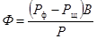
где Рф - масса выделенных фенолятов натра, г; Рщ - масса едкого натра, взятого для анализа, г.; Р - масса фракции, взятая для анализа, г.; В - выход фракции 170 - 270°С в испытуемом продукте, % по массе.
Примечание. Если фракции 170 - 270°С, полученной при разгонке и использованной при определении фенола, менее 10 г, для анализа следует накопить фракцию от разгонки нескольких партий.
4.6. Определение содержания активных СаО и MgO в извести. При испытании по ГОСТ 9179-70 4 - 5 г. извести предварительно растирают в течение 5 мин в фарфоровой или агатовой ступке. Затем 1 - 1,2 г. извести помещают в коническую колбу объемом 250 мл, наливают 150 мл дистиллированной воды, добавляют 15 - 20 стеклянных бус или оплавленных стеклянных палочек (длиной 3 - 5 мм), закрывают стеклянной воронкой и нагревают содержимое колбы в течение 5 мин, не доводя до кипения. По остывании омывают стенки колбы и стеклянную воронку кипяченой дистиллированной водой, добавляют 2 - 3 капли 1 %-ного раствора фенолфталеина и титруют при постоянном взбалтывании 1Н раствором соляной кислоты до полного обесцвечивания содержимого. Титрование считается оконченным, если по истечении 5 мин не появится окрашивание содержимого колбы. Титруют медленно, добавляя кислоту по каплям.
Содержание CaO + MgO для молотой негашеной извести ( % по массе) определяют по формуле
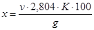
где v - количество 1Н соляной кислоты, израсходованной на титрование, мл; К - поправка к титру 1Н раствора соляной кислоты; 2,804 - количество окиси кальция, соответствующее 1 мл 1Н раствора соляной кислоты, умноженное на 100; g - навеска извести, г.
Содержание СаО + MgO для гидратной извести (пушонки) находят по формуле ( % по массе)
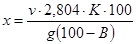
где В - влажность гидратной извести (пушонки).
Для определения влажности извести-пушонки навеску в 10 г помещают в стакан для взвешивания и высушивают в сушильном шкафу при 105 - 110°С до постоянной массы. Стакан помещают под воронку. Первое взвешивание производят после 2 ч сушки, а повторные - через 40 мин.
Перед взвешиванием стакан с навеской выдерживают в эксикаторе в течение 20 мин. Влажность (в % по массе) определяют по формуле
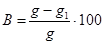
где g - навеска испытуемой извести, г.; g1 - масса извести после сушки, г.
4.7. Эмульсии по всем показателям испытывают на двух параллельных пробах объемом не менее 2 л. Перед взятием проб эмульсию в емкости тщательно перемешивают. Если перемешивание невозможно, отбирают пробы из трех мест на различной глубине емкости и смешивают их, составляя среднюю пробу. Посуда для отбора проб должна быть, чистой и не содержать остатков других эмульсий.
Испытывают эмульсию после остывания до комнатной температуры. Перед испытанием эмульсию тщательно перемешивают и процеживают через сито с сеткой № 125 (ГОСТ 6613-53).
4.8. Определение содержания битума с эмульгатором. В предварительно взвешенную со стеклянной палочкой фарфоровую чашку диаметром 75 - 100 мм наливают около 30 г эмульсии и вновь взвешивают чашку с эмульсией и палочкой на тех же технических весах.
Чашку с эмульсией и стеклянной палочкой устанавливают на закрытую электрическую плитку или песчаную баню и выпаривают воду из эмульсии. Во избежание разбрызгивания при выпаривании эмульсию периодически перемешивают. Выпаривание считают законченным, когда прекратится выделение пузырьков пара из эмульсии и поверхность остатка в чашке станет зеркальной.
После этого чашку охлаждают в эксикаторе и взвешивают вместе со стеклянной палочкой.
Содержание битума с эмульгатором (в % по массе) определяют по формуле
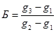
где g1 - масса чашки с палочкой, г; g2 - масса чашки с палочкой и эмульсией, г; g3 - масса чашки с палочкой и остатком после выпаривания воды из эмульсии, г.
4.9. Определение скорости распада. Для определения скорости распада используют эмульсию с 50 % битума. При содержании битума более 50 % эмульсию разбавляют раствором эмульгатора, количество которого рассчитывают по п. 3.39.
Скорость распада анионных эмульсий определяют при смешении их с портландцементом марок 400 или 500. Цемент просеивают через сито с сеткой № 063. В чистую сухую фарфоровую чашку диаметром 100 мм отвешивают на технических весах 100 г эмульсии в мерный цилиндр объемом 100 мл всыпают без уплотнения 50 мл цемента. Затем цемент всыпают в эмульсию со скоростью около 5 мл/мин. из расчета введения всей нормы цемента в течение 10 мин. С начала всыпания цемента в эмульсию включают секундомер. Цемент с эмульсией непрерывно перемешивают стеклянной палочкой. Перемешивание прекращают и одновременно выключают секундомер в момент распада эмульсии, устанавливаемый визуально по превращению всей смеси в неразмешиваемый комок.
Если смесь не превратилась в комок после введения всего количества цемента за 10 мин, то ее продолжают перемешивать еще 2 - 3 мин, после чего опыт прекращают. Скорость распада эмульсии подсчитывают с точностью до ±0,5 мин.
Примечание. Некоторые эмульсии образуют с цементом густую, трудноразмешиваемую смесь, но при этом не распадаются. Для контроля опыта из образовавшегося комка эмульсии с цементом отбивают шпателем небольшой комочек, помещают в фарфоровую чашку, добавляют несколько миллилитров дистиллированной воды и перемешивают. Если смесь разбавляется водой, то распада эмульсии не произошло.
Скорость распада катионных эмульсий определяют при смешении их с кварцевым порошком, имеющим удельную поверхность 3500 см2/г. Порошок получают помолом промытого и высушенного кварцевого песка в лабораторной мельнице любой конструкции. Предпочтительны мельницы с керамическими измельчающими органами. Удельную поверхность порошка определяют прибором ПСХ-4. Чистую сухую керамическую чашку диаметром 75 - 100 мм вместе со стеклянной палочкой взвешивают и, не снимая чашку с весов, наливают 50 г эмульсии с точностью ±0,01 г. Фиксируют массу чашки с палочкой и эмульсией g1. Снимают чашку с весов и при непрерывном перемешивании стеклянной палочкой всыпают кварцевый порошок небольшими порциями (2 г в минуту) до начала распада эмульсии, устанавливаемого визуально по превращению смеси эмульсии с порошком в неразмешиваемый комок и отделению воды. Чашку со смесью и палочкой взвешивают и рассчитывают количество израсходованного порошка по формуле
П=2(g2 - g1) %, (16)
где g1 - масса чашки с палочкой и эмульсией, г.; g2 - масса чашки с палочкой и смесью эмульсии с кварцевым порошком, г.
Величина П принимается за показатель скорости распада катионных эмульсий.
Определение вязкости на вискозиметре ВУ начинают с проверки водного числа вискозиметра. Внутренний цилиндр, деревянный стержень и стеклянную колбу, прилагаемую к прибору, тщательно промывают растворителем (бензином, петролейным эфиром или спиртом), а затем дистиллированной водой. Прибор высушивают воздухом или тщательно протирают фильтровальной бумагой, колбу высушивают в термостате. В трубку вставляют деревянный стержень. Наливают во внутренний цилиндр дистиллированную воду, нагретую до 20°С, несколько выше указательных остриев крючков, которые должны находиться в горизонтальной плоскости, что достигается подвинчиванием уравнительных винтов в треножнике. Во внешний цилиндр (баню) наливают воду, также нагретую до 20°С. При помощи водяной бани температуру воды во внутреннем цилиндре поддерживают в течение 10 - 15 мин. на уровне 20°С, потом слегка приподнимают стержень и выпускают немного воды, чтобы вся сточная трубка заполнилась ею. После этого пипеткой отсасывают излишек воды, а при недостатке добавляют ее, чтобы уровень воды находился точно на высоте остриев указательных крючков. Прибор закрывают крышкой, придерживая стержень, запирающий сточное отверстие. Убедившись, что температура воды во внутреннем цилиндре равна 20°С, под сточное отверстие подставляют чистую сухую измерительную стеклянную колбу объемом 200 мл. Затем не толкая прибор, быстро приподнимают рукой стержень и тщательно, по секундомеру, отмечают время заполнения колбы водой до черты 200 мл по нижнему краю мениска. Среднее арифметическое из трех параллельных определений принимают за показатель водного числа прибора, которое должно быть в пределах 50 - 52 с. Водное число вискозиметра проверяют не реже 1 раза в 3 мес. Далее переходят к определению вязкости эмульсин.
Осушив внутренний цилиндр вискозиметра фильтровальной бумагой, закрывают сточную трубку стержнем и наливают в него эмульсию (избегая образования пузырьков воздуха) в таком количестве, чтобы уровень ее совпадал с верхними точками указательных остриев крючков. Если уровень эмульсии оказался выше, то дают стечь излишку в чашку, подняв немного стержень, при недостатке прибавляют эмульсию по каплям до нужного уровня. Затем прибор закрывают крышкой. Воду во внешнем цилиндре нагревают на 1 - 2°С выше температуры опыта и во время эксперимента поддерживают ее кольцевой горелкой, а для равномерности нагрева перемешивают воду мешалкой.
Когда термометр, находящийся в испытуемой эмульсии, покажет требуемую температуру 20°С, быстро вынимают стержень и включают одновременно секундомер. Секундомер останавливают в тот момент, когда уровень вытекающей в мерную колбу эмульсии достигает отметки 200 мл, причем пену в расчет не принимают. Струя эмульсии в течение всего опыта должна быть непрерывной.
Величину условий вязкости испытуемой эмульсии определяют по формуле (в градусах)
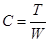
где Т - продолжительность истечения 200 мл эмульсии, с; W - водное число вискозиметра, с.
Определение вязкости на вискозиметре для нефтяных битумов начинают с тщательной промывки бензином или каким-либо другим растворителем и просушивания воздухом внутренних стенок цилиндра, вкладыша и шарикового клапана. Наружный цилиндр (баню) наполняют водой, нагретой на 1 - 2°С выше эмульсин (20°С). После этого баню закрывают крышкой со вставленным в нее термометром, внутренний цилиндр, вкладыш и его отверстие смачивают раствором эмульгатора (допускается смачивание дистиллированной водой при испытании медленнораспадающейся эмульсии). Два стеклянных цилиндра объемом по 100 мл тщательно промывают бензином, дистиллированной водой и высушивают.
Около 150 г эмульсии заливают во внутренний цилиндр вискозиметра с таким расчетом, чтобы боковой штифт отвесно поставленного шарикового клапана был погружен в эмульсию до половины своего диаметра. Пена, образовавшаяся при заливке эмульсии, в расчет не принимается. Температуру воды во внешнем цилиндре поддерживают постоянной во время всего опыта. Температуру испытываемой эмульсии устанавливают, погружая в нее термометр, и придерживая при этом рукой стержень с шариковым клапаном.
Когда температура эмульсии достигнет 20°С, под сточное отверстие подставляют чистый сухой цилиндр и взяв в левую руку секундомер, быстро приподнимают стержень и вешают его на край цилиндра. В момент, когда уровень вытекающей эмульсии достигнет в мерном цилиндре метки 25 мл, включают секундомер. Когда уровень эмульсии в цилиндре достигает метки 75 мл, секундомер выключают и отсчитывают время истечения 50 мл эмульсии в секундах, которое принимается за величину условной вязкости. Истечение струи эмульсии должно быть непрерывным. Расхождение между двумя параллельными испытаниями не должно превышать 1 с.
Сито тщательно промывают бензином, водой с мылом, потом дистиллированной водой, высушивают и охлаждают до комнатной температуры. Сито помещают в чашку и взвешивают с точностью до 0,01 г. Затем сито вынимают из чашки и смачивают раствором эмульгатора; при испытании медленнораспадающихся эмульсий и паст допускается смачивание сита дистиллированной водой. Воронку устанавливают в кольцо штатива, сито помещают в воронку и дают каплям стечь. Под воронку подставляют сосуд объемом не менее 2 л.
В сосуд вместимостью 250 мл отвешивают 200 г с точностью до 0,01 г предварительно перемешанной эмульсии. Навеску эмульсии равномерно и непрерывно процеживают через сито, слегка постукивая по верхнему ребру сита стеклянной палочкой, не допуская разбрызгивания эмульсии. Освобожденный от эмульсии сосуд промывают раствором эмульгатора, сливая его на сито. Остаток на сите также промывают раствором эмульгатора, а затем водой до получения чистых промывных вод. После этого сито ставят в чашку, с которой его предварительно взвешивали, сушат до постоянной массы при температуре 105 - 110°С, охлаждают в эксикаторе до комнатной температуры и взвешивают вместе с чашкой с точностью до 0,01 г.
Однородность устанавливают по остатку на сите и вычисляют по формуле
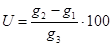
где g1 - масса сита и чашки, г; g2 - масса сита с остатком и чашкой, г; g3 - навеска эмульсии, г.
4.12. Для определения устойчивости эмульсии при хранении в четыре чистых сухих стеклянных цилиндра объемом 250 мл и высотой 250 мм наливают по 200 мл предварительно перемешанной эмульсии таким образом, чтобы не испачкать стенки сосудов. Цилиндры плотно закрывают пробками и оставляют при комнатной температуре в спокойном состоянии. Эмульсию из двух цилиндров испытывают через 7 сут, из двух других - через 30 сут в соответствии с п. 4.11.
При использовании эмульсии для устройства конструктивных слоев рассеивают 1 кг щебня, отбирают фракцию 5 - 10 мм, промывают и высушивают. В фарфоровой или эмалированной чашке отвешивают 300 г щебня, смачивают его 3 г воды, добавляют 18 г эмульсии и перемешивают 1 мин. Щебень раскладывают на стеклянную пластинку размером 15×15 см слоем в одну щебенку и оставляют при комнатной температуре на 24 ч. По истечении указанного времени половину щебня помещают в чашку, полностью заливают холодной дистиллированной водой и оставляют при комнатной температуре на 24 ч. Затем щебень перемешивают, воду сливают, а щебень раскладывают слоем в одну щебенку на стеклянную пластинку рядом со щебнем, не подвергавшимся действию воды, и визуально оценивают водоустойчивость пленки из эмульсии в соответствии с табл. 12.
Таблица 12
Шкала оценки водоустойчивости пленки эмульсии на минеральных материалах
|
Состояние пленки после действия холодной дистиллированной воды или кипячения |
Оценка водоустойчивости |
|
Пленка эмульсии полностью сохранилась на поверхности щебня. Допускается оголение острых ребер и углов щебенок. |
Хорошо |
|
Пленка эмульсии частично смыта водой; наблюдается обнажение отдельных участков поверхности щебенок (до 30 %). |
Удовлетворительно |
|
Пленка эмульсии смыта, водой с большей части поверхности минерального материала |
Плохо |
Эмульсию считают выдержавшей испытание, если водоустойчивость оценена хорошо или удовлетворительно.
При использовании эмульсии для устройства поверхностной обработки проводят испытания на водоустойчивость следующим образом. Около 0,5 кг щебня промывают и высушивают. Из пробы отбирают три щебенки кубовидной или шестигранной формы, обвязывают их ниткой или мягкой проволокой, погружают на 1 - 2 с в стакан с дистиллированной водой, вынимают из воды, стряхивают капли и сразу же погружают на 2 - 3 с в испытываемую эмульсию, вынимают их и подвешивают на штативе так, чтобы щебенки не касались друг друга. Испытывают щебенки через сутки. Для этого на закрытой электроплитке стакан с дистиллированной водой нагревают до 100°С (не допуская бурного кипения); каждую из подвешенных на штативе щебенок поочередно погружают в кипящую воду на 30 мин. По истечении указанного срока снимают фильтровальной бумагой с поверхности воды всплывший битум, вынимают щебенку и визуально оценивают состояние пленки (см. табл. 12).
Эмульсию тщательно перемешивают и наливают по 200 мл в две чистые сухие колбы объемом по 250 мл каждая и плотно закрывают пробками, затем устанавливают на площадку прибора, закрепляя их зажимами. Прибор включают в электрическую сеть и отмечают время включения. Эмульсию испытывают в, течение 2 ч. После испытания прибор выключают и, когда образовавшаяся пена спадает, визуально оценивают состояние эмульсии. Эмульсия не должна распадаться, т.е. необратимо разделиться на битум и воду.
4.15. Для определения свойств битума, выделенного из эмульсии, эмульсию в количестве не менее 500 г наливают в эмалированный сосуд диаметром 16 - 20 см и высотой 10 - 16 см; помещают сосуд в термостат или на закрытую электрическую плитку и выпаривают воду при температуре 105 - 110°С, периодически перемешивая.
Выпаривание заканчивают, когда прекратится выделение пузырьков пара и поверхность битума, выделенного из эмульсии, станет зеркальной. Глубину проникания иглы и растяжимость битума, выделенного из эмульсии, определяют по ГОСТ 11501-65 и ГОСТ 11505-65.
4.16. Для оценки качества обратной эмульсии из всей приготовленной партии отбирают 1 - 2 кг в фарфоровый, эмалированный или стеклянный сосуд. Перед взятием пробы эмульсию тщательно перемешивают.
4.17. Содержание воды в обратной эмульсии определяют по методике п. 4.1.
4.18. Вязкость обратных эмульсий определяют на вискозиметре для нефтяных битумов с отверстием 5 мм при температуре 60°С по п. 4.10.
4.19. Однородность эмульсии определяют визуально. В эмульсию помещают на мгновение стеклянную палочку: после извлечения из эмульсии на ее поверхности не должно быть непроэмульгированных капель воды.
4.20. Для определения устойчивости при хранении эмульсию хранят в течение 7 сут в закрытом стеклянном цилиндре при комнатной температуре. Если при этом произойдет расслаивание, то после перемешивания однородность эмульсии должна восстанавливаться.
При определении способности к обволакиванию обратных вязких эмульсий ТЭО-В щебень и эмульсию подогревают до 40 - 60°С.
Способность к обволакиванию считается удовлетворительной, если необработанными обратной эмульсией остаются только углубления на поверхности щебня, а прямой эмульсией обволакивается не менее 90 % поверхности его; причем прямая эмульсия не должна стекать с поверхности щебня,
4.23. Для определения водоустойчивости пленки из обратной эмульсии обработанный в соответствии с пп. 4.21 и 4.22 материал раскладывают тонким слоем и выдерживают при комнатной температуре в течение 30 мин, затем 100 г материала помещают на металлическую сетку, подвешивают ее в стакане с кипящей водой и кипятят 30 мин. После кипячения оценивают водоустойчивость пленки вяжущего по шкале (см. табл. 12).
5.1. Рекомендации по использованию эмульсий для дорожного строительства приведены в табл. 13, а на рис. 2 даны конструкции дорожных одежд, устраиваемых с применением эмульсий.
Таблица 13
Рекомендации по использованию эмульсий
|
Дорожно-климатические зоны |
Марки эмульсий и пасты |
Минимальная температура, при которой допускается производство работ, °С |
|
|
|
1 |
2 |
3 |
4 |
|
|
Устройство конструктивных слоев дорожных одежд из различных видов эмульсионно-минеральных смесей, приготавливаемых в установке: |
|
|||
|
а) черный щебень |
I - V |
СК, СА ЭО-В, ЭО |
0 |
|
|
совместно с СА пли МА-1 |
-5 |
|
||
|
б) пористые щебеночные смеси |
II - V |
СК, МК |
5 |
|
|
СА, МА-1 |
10 |
|
||
|
ЭО-В, ЭО совместно с СА или MA-1 |
||||
|
-5 |
||||
|
в) плотные щебеночные смеси |
II - V |
МА-1, МК |
10 |
|
|
г) гравийные и гравийно-песчаные смеси |
II - V |
МА-1, МК |
10 |
|
|
д) песчаные смеси, обработанные эмульсией и цементом. |
II - V |
МА-1, МА-2 |
10 |
|
|
Устройство конструктивных слоев дорожных одежд из минеральных материалов (щебня, гравия, песка), обработанных способом смешения на дороге. |
II - V |
МА-2, пасты СА |
15 |
|
|
Устройство конструктивных слоев дорожных одежд из щебня, обработанного способом пропитки. |
II - V |
СА, СК |
15 |
|
|
МА-1 |
20 |
|
||
|
Устройство слоев износа с шероховатой поверхностью |
I - V |
БК, СК |
5 |
|
|
II - V |
БА-1, СА |
15 |
|
|
|
III - V |
Пасты |
20 |
|
|
|
Уход за свежеуложенным цементобетоном и цементогрунтом |
II - V |
БА-2, СА |
10 |
|
|
МА-1 |
25 |
|
||
|
Укрепление поверхности откосов земляного полотна, закрепление песков в верхнем слое земляного полотна, закрепление подвижных песков |
II -V |
МА-1, МА-2 |
10 |
|
|
Подгрунтовка |
I - V |
Прямые эмульсии всех видов |
10 |
|
|
Обеспыливание |
II - V |
МА-2 |
10 |
|
Примечание. Обозначение эмульсий см. пп. 1.5, 2.1, 2.10.
5.2. Расчетные модули упругости конструктивных слоев, устраиваемых с применением эмульсий, приведены в табл. 14.
Таблица 14
Расчетные модули упругости конструктивных слоев дорожных одежд, устраиваемых с применением эмульсий
|
Материал слоя |
Еу кгс/см3 |
||
|
1 |
Щебень и пористые щебеночные смеси, обработанные эмульсией: |
||
|
щебень 1-го и 2-го классов |
6000 - 8000 |
||
|
щебень 3-го класса |
5000 - 6000 |
||
|
2 |
Щебеночные смеси плотные, обработанные эмульсией |
6000 - 9000 |
|
|
3 |
Гравийные смеси оптимального зернового состава с добавлением 25 - 40 % дробленых зерен, обработанные эмульсией |
4000 - 5500 |
|
|
4 |
Гравийные и гравийно-песчаные смеси, обработанные двумя вяжущими - битумной эмульсией и цементом |
5000 - 7000 |
|
|
5 |
Песчаные смеси, обработанные двумя вяжущими - битумной эмульсией и цементом |
4000 - 6000 |
|
|
6 |
Щебень 1-го и 2-го классов, обработанный эмульсией по способу пропитки |
4000 - 6000 |
|
Примечания. 1. Модули упругости позиций 1 - 5 даны для материалов, обработанных вяжущим в установке; для соответствующих материалов, обработанных вяжущим на дороге, модули упругости должны быть снижены на 20 %.
2. Модули упругости грунтов, т.е. материалов, применяемых без переработки и обогащения гранулометрическими добавками, см. «Инструкцию по применению грунтов, укрепленных вяжущими материалами, для устройства оснований и покрытий автомобильных дорог и аэродромов» (СН 25-74).
Рис. 2. Схемы конструкций дорожных одежд для I - V категорий дорог, устраиваемых с применением эмульсий:
1 - двухслойное покрытие из горячего асфальтобетона; 2 - основание из эмульсионно-минеральной смеси; 3 - двухслойное покрытие из эмульсионно-минеральной смеси (верхний слой из плотной смеси, нижний - из пористой); 4 - основание из щебня с пропиткой эмульсией на глубину 6 - 8 см; 5 - поверхностная обработка с эмульсией; 6 - покрытие из эмульсионно-минеральной смеси: 7 - основание из щебня, обработанного эмульсией; 8 - покрытие или основание из гравийно-песчаной или песчаной смесей, обработанных битумной эмульсией и цементом; 9 - подстилающий песчаный слой
5.3. Область применения эмульсионно-минеральных смесей в конструктивных слоях дорожных одежд в основном та же, что и аналогичных им битумоминеральных смесей, приготовленных горячим способом.
Особые случаи применения некоторых разновидностей эмульсионно-минеральных смесей оговорены в соответствующих разделах Технических указаний.
5.4. Эмульсионно-минеральные смеси отличаются от горячих битумоминеральных более длительным сроком формирования, зависящим от погодно-климатических факторов, что обусловливает наличие особенностей в технологии работ, необходимых для обеспечения качества и несущей способности конструкций, выполненных с применением эмульсий.
ЧЕРНЫЙ ЩЕБЕНЬ
5.5. Щебень, обработанный эмульсией, можно использовать непосредственно после приготовления или заготавливать впрок, т.е. хранить в штабелях. Такой способ не только устраняет зависимость строительных объектов от смесительной установки, но и ускоряет процесс формирования конструктивных слоев благодаря формированию пленки вяжущего на щебне в период хранения.
5.6. Щебень применяют как основных, так и кислых пород рядовой или определенной фракции. Содержание в щебне пылевидных, илистых или глинистых частиц должно соответствовать СНиП 1-Д. 2-70.
5.7. Для обработки щебня применяют среднераспадающиеся анионные и катионные, а также обратные эмульсии вязкие ЭО-В и жидкие ЭО в сочетании с прямыми марок СА и МА-1.
5.8. Эмульсии, используемые для обработки щебня, должны выдерживать испытание на водоустойчивость пленки по п. 4.13 для прямых эмульсий и по п. 4.23 - для обратных. Если прямая эмульсия не выдерживает испытания, в щебень необходимо вводить 0,5 % извести от массы щебня.
5.9. При обработке щебня, предназначенного для укладки сразу после приготовления, используют эмульсии, содержащие битум марок БНД-40/60, БНД-60/90 или БНД-90/130.
Для щебня, заготавливаемого впрок, применяют прямые эмульсии, приготовленные на битумах пониженной вязкости (с глубиной проникания иглы 200 - 250), обратные ЭО-В и ЭО в сочетании с прямыми СА и МА-1, приготавливаемыми на битумах марок БНД-40/60 и БНД-60/90.
Битумы с глубиной проникания 200 - 250 могут быть получены на нефтеперерабатывающем заводе либо на эмульсионной базе путем разжижения более вязкого битума. В качестве разжижителя рекомендуется дизельное топливо (ГОСТ 4749-49*), .моторное топливо (ГОСТ 1667-68), мазут (10585-63**), сланцевое масло (ГОСТ 4806-66*). В зависимости от вязкости исходного битума количество разжижителя может быть в пределах 5 - 12 %.
5.10. Количество эмульсии, необходимое для обработки щебня, зависит от его крупности и составляет 3 - 4,5 % в пересчете на битум (см. табл. 15). При обработке щебня обратной эмульсией совместно с прямой 40 % вяжущего вводят в виде обратной эмульсии и 60 % в виде прямой.
Таблица 15
Ориентировочное количество вяжущего при обработке эмульсиями щебня различных фракций и пористых щебеночных смесей
|
Количество битума (дегтя), % от массы щебня |
|||
|
Обработка одной прямой или одной обратной эмульсиями |
Обработка прямой эмульсией совместно с обратной |
||
|
Количество сланцевого битума или каменноугольного дегтя, вводимого в виде обратной эмульсии |
Количество битума, вводимого в виде примой эмульсии |
||
|
Щебень |
|||
|
25 - 40 |
3 |
1,2 |
1.8 |
|
15 - 25 |
3,5 |
1,4 |
2,1 |
|
5 - 15 |
4,5 |
1,6 |
2,4 |
|
5 - 10 |
4,5 |
1,8 |
2,7 |
|
Щебеночные смеси, содержащие около 5 % частиц размером 0,071 мм |
|||
|
0 - 35 |
4,5 |
- |
- |
|
0 - 20 |
5,5 |
- |
- |
|
0 - 10 |
6,0 |
- |
- |
Примечание. Количество эмульсии рассчитывают по формуле 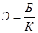
5.11. Щебень обрабатывают в смесителях принудительного действия, обеспечивающих дозирование всех компонентов. При обработке прямой эмульсией сначала в смеситель подают щебень и известь (если это требуется для улучшения водоустойчивости пленки вяжущего), перемешивают до равномерного распределения извести по поверхности щебня, затем вводят эмульсию. При обработке обратной вязкой эмульсией щебень сначала обязательно перемешивают с известью, затем с обратной эмульсией. Если обрабатывают щебень двумя эмульсиями, сначала его перемешивают с известью, затем с обратной эмульсией и наконец с прямой. При работе с прямыми или с обратными жидкими эмульсиями ЭО в сочетании с прямыми, как правило, не требуется подогрева минеральных материалов и эмульсии. Обратную эмульсию вязкую ЭО-В нагревают до 60 - 70°С, а обрабатываемый ею щебень до 20 - 60°С.
5.12. Готовую смесь выгружают в автомобили-самосвалы и отвозят к месту складирования или на строительный объект. Местом складирования черного щебня может служить открытая, тщательно спланированная бульдозером площадка. Во избежание загрязнения щебня грунтом и для обеспечения дренажа воды, вытекающей из смеси в процессе ее формирования, и дождевой воды, площадку засыпают слоем песка толщиной в несколько сантиметров. Смесь укладывают в штабель, высоту и объем которого устанавливают исходя из производительности смесительной установки, размеров площадки, предполагаемых сроков хранения.
5.13. Щебень, обработанный эмульсией, может храниться в штабеле, не слеживаясь несколько месяцев. Образующаяся со временем корка плотного материала не препятствует разработке штабеля. В процессе разработки и погрузки она разрыхляется. Черный щебень погружают экскаватором или погрузчиком, транспортируют к месту работ автомобилями-самосвалами.
5.14. Черный щебень укладывают асфальтоукладчиком или автогрейдером в соответствии с «Инструкцией по устройству покрытий и оснований из щебня (гравия), обработанного органическими вяжущими» (ВСН 123-65). Работы по укладке черного щебня из штабеля в конструктивный слой можно выполнять при температуре воздуха 0 - 5°С. Свежеприготовленный щебень, обработанный анионной эмульсией, укладывают в конструктивный слой при температуре воздуха не ниже 10, катионной - не ниже 5, обратной совместно с прямой пли одной обратной до -5°С.
5.15. Для уплотнения, которое начинают сразу после распределения черного щебня, применяют средние и тяжелые катки как с металлическими вальцами, так и на пневматических шинах. Если при уплотнении щебень прилипает к катку, поверхность укладываемого слоя нужно присыпать небольшим количеством песка.
5.16. Если по устроенному конструктивному слою сразу открывают движение транспортных средств, поверхность материала в процессе уплотнения необходимо присыпать песком из расчета 3 - 5 кг/м2.
5.17. При стадийном строительстве слои из щебня, обработанного эмульсией, могут служить покрытиями при условии устройства на них поверхностной обработки.
ПОРИСТЫЕ ЩЕБЕНОЧНЫЕ СМЕСИ
5.18. Рекомендуемый зерновой состав пористых щебеночных смесей, полученных дроблением горной породы без последующего разделения на фракции или составленных из щебня различных фракций и отсева продуктов дробления или природного песка приведен на рис. 3.
Рис. 3. Кривые зернового состава пористых щебеночных смесей
5.19. Свойства смесей, обработанных эмульсиями, должны соответствовать требованиям п. 6.6.
5.20. Для обработки щебеночных смесей из кислых пород целесообразно использовать катионные эмульсии, обеспечивающие хорошее сцепление эмульгированного битума со щебнем и быстрое формирование смеси, а также обратные вязкие ЭО-В и жидкие ЭО в сочетании с прямыми эмульсиями марок СА и МА-1. В случае применения обратных эмульсий щебень необходимо предварительно обработать известью.
Для обработки щебеночных смесей из основных пород рекомендуются анионные эмульсии, обеспечивающие, как правило, хорошее сцепление.
5.21. Для обработки щебеночных смесей, содержащих до 5 % частиц мельче 1,25 мм (в том числе не более 2 % пыли и глины) целесообразно применять среднераспадающиеся эмульсии марок СА, СК.
При большем содержании вышеуказанных фракций необходимо применять медленнораспадающиеся эмульсии марок МК, МА-1 и МА-2.
5.22. Эмульсии, используемые для обработки щебеночных смесей, должны выдерживать испытание на водоустойчивость пленки в соответствии с пп. 4.13 и 4.23. Если эмульсия не выдерживает испытания, в щебеночную смесь необходимо добавить 1 - 2 % извести (от массы смеси).
5.23. Количество вводимого в смесь вяжущего определяется требованиями, предъявляемыми к конструктивному слою. Ориентировочно эмульсии (в пересчете на битум) должно быть 4,5 - 6 % (см. табл. 15). Меньшее количество вяжущего назначается в нижние слои основания.
Как правило, для менее прочного и менее плотного щебня вяжущего требуется больше, чем для плотного и прочного при одинаковом зерновом составе.
Запыленный минеральный материал лучше обрабатывать эмульсией пониженной концентрации. Концентрацию уточняют по пробному замесу. При изменении концентрации эмульсии количество вводимого в смесь битума должно быть постоянным. Обратную эмульсию применяют 70 - 80 %-ной концентрации
5.25. Пористые щебеночные смеси следует обрабатывать эмульсией в смесительных установках, оборудованных мешалками с принудительным перемешиванием непрерывного или периодического действия и дозаторами для всех материалов. Из серийно выпускаемых смесителей для приготовления эмульсионно-минеральных смесей пригодны Д-709. Использование смесительных установок, предназначенных для приготовления асфальтобетонных смесей (Д-597) и бетонных (С-780), требует их частичного переоборудования.
5.26. Точность дозирования щебня ±5 %, эмульсин ±3 % от взвешиваемого количества.
5.28. Работы по устройству слоя из щебеночных смесей, обработанных анионными эмульсиями, можно проводить при температуре воздуха не ниже 10°С, катионными эмульсиями - до 5°С, обратными в сочетании с прямыми - до -5°С. Не разрешается укладывать смеси с анионной эмульсией в дождливую погоду во избежание вымывания вяжущего из смеси. Щебеночные смеси, обработанные эмульсией, укладывают асфальтоукладчиками или автогрейдером в соответствии с ВСН 123-65.
5.29. Пористые щебеночные смеси уплотняют самоходными катками на пневматических шинах или средними и тяжелыми катками с гладкими вальцами после того, как эмульсия начинает распадаться и смесь становится черного цвета. Если при уплотнении щебень прилипает к катку, поверхность уплотняемого слоя присыпают небольшим количеством песка. Покрытия, устраиваемые из пористых смесей, перед окончанием уплотнения расклинцовывают необработанным щебнем фракции 5 - 15 мм.
5.30. По окончании уплотнения щебеночных смесей, обработанных катионной эмульсией, сразу открывают движение транспортных средств; при обработке анионной эмульсией в сухую теплую погоду движение разрешают в тот же день (ограничивая скорость до 30-40 км/ч и регулируя его по ширине проезжей части); во влажную прохладную погоду движение закрывают на несколько суток для формирования слоя.
5.31. На слоях из пористых щебеночных смесей, обработанных эмульсией, допускается устройство других конструктивных слоев или поверхностной обработки не ранее чем через 3 - 5 дней при сухой теплой погоде.
ПЛОТНЫЕ ЩЕБЕНОЧНЫЕ СМЕСИ
5.32. Плотные щебеночные смеси, обработанные эмульсиями, применяют для устройства покрытий на автомобильных дорогах III - V категорий.
Свойства плотных щебеночных смесей, обработанных эмульсиями, должны соответствовать техническим требованиям, указанным в п. 6.6.
5.33. Особенностью плотных смесей является длительный период формирования, обусловленный, с одной стороны, применением медленнораспадающейся эмульсии, взаимодействие которой с минеральным материалом, а следовательно, и распад происходит в течение длительного времени, а с другой стороны, высокой плотностью материала, препятствующей испарению воды и формированию слоя.
Эти особенности требуют соблюдения следующих условий для обеспечения качества работ:
покрытия из плотных, эмульсионно-минеральных смесей следует устраивать толщиной не более 3 - 4 см только в теплую сухую погоду (при температуре не ниже 10°С) и с таким расчетом, чтобы покрытие сформировалось до наступления устойчивой ненастной осенней погоды и заморозков;
влажность минеральных материалов должна быть ограничена 3 - 5 %;
обязательно введение 1,5 - 2 % (от массы минеральной части) извести-пушонки при использовании анионных эмульсий.
5.34. Зерновой состав плотных эмульсионно-минеральных смесей подбирают в соответствии с кривыми рис. 4. При этом известь учитывается как добавка частиц мельче 0,071 мм.
Рис. 4. Кривые зернового состава плотных щебеночных смесей.
5.35. Эмульсии приготовляют на битумах вязких марок (п. 3.1). Эмульсия должна быть медленнораспадающейся марок МА-1, МК 50 - 55 %-ной концентрации.
Возможность смешения минеральных материалов с эмульсией предварительно устанавливается лабораторией. При этом следует иметь в виду, что летом в южных районах в связи с сильным нагревом минеральных материалов может наблюдаться ухудшение качества перемешивания.
Порядок дозирования компонентов в смесителях периодического действия обычный, т.е. сначала взвешивают и подают минеральные материалы и известь, перемешивают их, а затем вводят эмульсию. Длительность перемешивания зависит от состава смеси, свойств эмульсии, влажности минеральных материалов, типа смесителя и определяется по пробным замесам.
5.37. Эмульсионно-минеральные смеси укладывают асфальтоукладчиком. Если смесь переувлажнена и становится неудобоукладываемой, ее вывозят к месту укладки и оставляют в валике на дороге, после просушивания распределяют автогрейдером.
5.38. Для уплотнения эмульсионно-минеральных смесей применяют катки на пневматических шинах. Последние 2 - 3 прохода делают катками с металлическими вальцами для выравнивания поверхности покрытия.
5.39. Движение транспортных средств, регулируемое по ширине покрытия, открывают сразу после уплотнения, ограничивая скорость и запрещая длительные остановки на свежеуложенном покрытии в течение первых двух суток.
5.40. Поверхностную обработку на покрытии из плотных эмульсионно-минеральных смесей допускается устраивать после его формирования, но не ранее чем через 5 - 7 сут при сухой теплой погоде.
ГРАВИЙНЫЕ И ГРАВИЙНО-ПЕСЧАНЫЕ СМЕСИ
5.41. Гравийные смеси как карьерные, так и составленные из песка и гравия, содержащие согласно СНиП 1-Д.2-70 от 50 до 80 % зерен крупнее 5 мм, должны иметь непрерывную гранулометрию (рис. 5).
Карьерные смеси, зерновой состав которых не соответствует требованиям к плотным смесям, обогащают гранулометрическими добавками.
Рис. 5. Кривые зернового состава плотных гравийных смесей
5.42. Для обеспечения лучшей удобоукладываемости смеси и большой несущей способности слоя рекомендуется обогащать гравийную смесь 25 - 45 % дробленых частиц (от общего количества гравийных частиц).
5.43. Для оснований рекомендуются смеси с максимальным размером зерен 30 - 35 мм и содержанием частиц менее 0,071 мм до 4 %, для покрытий с максимальным размером зерен до 20 мм и содержанием частиц менее 0,071 мм до 10 - 12 %. При этом глинистых частиц не должно быть больше 2 % по массе. Максимальный размер зерен ограничивают для того, чтобы получить более однородную смесь, которая лучше перемешивается и меньше расслаивается при транспортировке и укладке.
5.44. Если нельзя обогатить гравийную смесь дробленым гравием, целесообразно применить способ обработки одновременно двумя вяжущими - анионной битумной эмульсией и цементом; этот способ позволяет повысить несущую способность конструктивного слоя, водо- и морозостойкость материала. Двумя вяжущими (эмульсией и цементом) целесообразно укреплять также гравийно-песчаные смеси, содержащие менее 50 % гравийных частиц (крупнее 5 мм).
5.47. При обработке смесей анионной эмульсией для обеспечения сцепления пленки вяжущего с поверхностью каменного материала добавляют 1,5 - 2 % извести от массы минерального материала.
5.49. Свойства смесей должны соответствовать требованиям пп. 6.6 и 6.11.
5.50. Эмульсионно-гравийные смеси приготовляют в смесителях принудительного действия (пп. 5.27 и 5.36), обеспечивающих дозирование всех компонентов смеси. Длительность перемешивания устанавливают по пробным замесам.
5.51. Оптимальная влажность минеральных материалов при обработке их эмульсией или эмульсией совместно с цементом составляет 3 - 5 %. Когда возникает необходимость обработать минеральные материалы повышенной влажности, следует использовать эмульсию большей концентрации.
Если готовая смесь переувлажнена, ее следует оставить на некоторое время на промежуточном складе или в валике на дороге для подсушивания. Длительность выдерживания в валике зависит от погоды и влажности смеси. В теплую сухую погоду переувлажненную смесь достаточно выдержать в течение нескольких часов. В дождливую погоду смесь, не содержащая цемента, может храниться несколько суток.
5.52. При перевозке смесей, содержащих цемент, запрещается применять для смазки кузовов автомобилей-самосвалов нефть, мазут, соляровое масло и т.п. Вместо смазки кузов следует слегка увлажнить.
5.53. Смесь укладывают асфальтоукладчиком или разравнивают автогрейдером.
5.54. Смесь уплотняют непосредственно после укладки или через несколько часов (если она переувлажнена и ее необходимо подсушить), но обязательно до конца рабочей смены. Для смесей, содержащих цемент, нельзя допускать высыхания поверхности слоя до начала уплотнения.
5.55. Относительно тонкие слои (3 - 5 см) следует уплотнять легкими и средними катками. Слои большой толщины уплотняют средними и тяжелыми катками. Наиболее целесообразны катки на пневматических шинах. При уплотнении смеси катками на пневматических шинах последние 2 - 3 прохода следует делать катками с металлическими вальцами для выравнивания поверхности слоя.
5.56. По слою гравийных и гравийно-песчаных смесей движение транспортных средств открывают сразу после уплотнения регулируя его по ширине проезжей части и ограничивая скорость до 30 - 40 км/ч в течение нескольких суток.
5.57. Работы по устройству конструктивных слоев из гравийных и гравийно-песчаных смесей с катионными эмульсиями следует проводить при температуре воздуха не ниже 5°, а с анионными - не ниже 10°С.
5.58. На слое из гравийных и гравийно-песчаных смесей, обработанных эмульсией, допускается устройство других конструктивных слоев или поверхностной обработки после формирования его, но не ранее чем через 5 - 7 сут при сухой теплой погоде.
ПЕСЧАНЫЕ СМЕСИ
5.59. Песчаные смеси рекомендуется обрабатывать битумной эмульсией совместно с цементом. Песчаные смеси могут быть составлены из природного песка и минерального порошка или из природного песка и отходов камнедробления (высевок) гранитных или известняковых1. В качестве минеральных порошков можно использовать материалы, предусмотренные в табл. 3 ГОСТ 9128-76.
Слои из смесей, обработанных двумя вяжущими, обладают меньшей жесткостью, большей водо- и морозостойкостью, чем из песчаных смесей, укрепленных одним цементом. Наличие в этом материале битума увеличивает его устойчивость против усадочных и температурных напряжений. По сравнению с битумоминеральными песчаными смесями смеси, обработанные двумя вяжущими, отличаются большей прочностью и модулем упругости.
Небольшое количество цемента не только позволяет получить материал с более высокими прочностными показателями, но и в значительной мере ускоряет формирование эмульсионно-минеральных смесей и делает формирование в меньшей степени зависимым от погодных условий.
1 Укрепление песчаных грунтов без обогащения их гранулометрическими добавками см. СН 25-74.
5.60. Песчаные смеси, полученные способом обработки двумя вяжущими - битумной эмульсией и цементом, рекомендуются для устройства оснований на дорогах II - V категорий и покрытий на дорогах III и IV категорий.
5.61. Для устройства оснований пригодны крупно-, средне- и мелкозернистые песчаные смеси.
5.65. Свойства смесей должны соответствовать п. 6.11.
5.66. Смеси приготовляют в смесителях принудительного действия, обеспечивающих надлежащее дозирование всех компонентов. Длительность перемешивания устанавливают на основании визуальной оценки качества смеси в пробных замесах. Готовую смесь транспортируют к месту укладки в автомобилях-самосвалах. Для смазки кузовов запрещается применять нефть, мазут, соляровое масло и т.п. Вместо этого кузов машины нужно слегка увлажнить.
5.67. Работы по устройству конструктивных слоев из песчаных смесей, укрепленных битумной эмульсией и цементом, разрешается проводить при температуре воздуха не ниже 5 - 10°С. Заканчивать работы следует за 15 - 20 сут до наступления периода осенних дождей или устойчивых заморозков.
5.68. Смеси укладывают асфальтоукладчиком; можно применять автогрейдер. Запрещается укладывать смесь во время дождя во избежание переувлажнения смеси.
5.69. Смесь следует уплотнять самоходными катками на пневматических шинах. При устройстве покрытий уплотнение следует заканчивать катками с металлическими вальцами для выравнивания поверхности покрытия.
При производстве работ в жаркую сухую погоду свежеуложенный и уплотненный слой необходимо предохранить от быстрого испарения воды, разлив по поверхности битумную эмульсию из расчета 0,8 - 1 л/м2 и присыпав песком. Движение по свежеуложенному и уплотненному слою открывают сразу, запрещая длительные остановки транспортных средств в течение первых двух суток.
5.70. Покрытие по основанию из песка, укрепленного битумной эмульсией и цементом, устраивают в сухую тёплую погоду через 2 - 3 сут, при прохладной - через 5 - 7 сут.
5.71. Способом смешения на дороге обрабатывают щебеночные, гравийные, щебеночно-песчаные, гравийно-песчаные и песчаные смеси. При этом способе нельзя обеспечить высокую точность дозирования вяжущего и активной добавки, а также равномерность перемешивания материалов, что обусловливает более низкое качество работ, чем при приготовлении смесей в установке.
5.72. Способ смешения на дороге применяют для устройства конструктивных слоев дорожных одежд на дорогах IV и V категорий. Зерновой состав смесей должен отвечать требованиям пп. 5.18, 5.34, 5.41, 5.61 и 5.62,
5.73. Свойства эмульсионно-минеральных смесей должны отвечать требованиям пп. 6.6 и 6.11.
5.74. Для обработки щебеночных и гравийных смесей применяют эмульсии марок МА-1, МА-2, СА и пасты. Щебеночно-песчаные, гравийно-песчаные и песчаные смеси обрабатывают эмульсиями марок МА-1, МА-2 и пастами.
Эмульсии, используемые для обработки щебеночных и гравийных смесей, должны выдерживать испытание на водоустойчивость пленки в соответствии с п. 4.13. Для обеспечения водоустойчивости щебеночно-песчаных, гравийно-песчаных и песчаных смесей в минеральный материал перед обработкой его эмульсией вводят 1 - 2 % извести-пушонки. При обработке гравийно-песчаных и песчаных смесей эмульсией совместно с цементом известь не применяют.
5.75. Количество эмульсии (в пересчете на битум) составляет: для щебеночных и гравийных крупнозернистых смесей 3,5 - 5 %, среднезернистых 4,5 - 5,5 %, мелкозернистых 4,5 - 6 %; песчаных 5 - 7 %. Количество цемента назначают в соответствии с пп. 5.48 и 5.64.
5.76. Требуемая влажность минеральных материалов перед смешением с эмульсией зависит от температуры воздуха во время производства работ. В сухую ветреную погоду при температуре воздуха выше 15°С щебеночные и гравийные материалы увлажняют до 5 - 7 %; влажность щебеночно-песчаных, гравийно-песчаных смесей должна быть выше оптимальной на 1 - 2 %. В прохладную погоду минеральные материалы смешивают с эмульсией при естественной влажности.
5.77. Для приготовления щебеночных, гравийных, щебеночно-песчаных и гравийно-песчаных смесей используют автогрейдеры; для приготовления песчаных - фрезу Д-530 или автогрейдер.
Длину захватки при строительстве дорожного покрытия способом смешения на дороге с применением эмульсии назначают с учетом производительности смесительных машин, условий доставки эмульсии, погоды. Ранней весной и поздней осенью, когда обеспечена естественная влажность смеси и производится непрерывное снабжение эмульсией, длина захватки может быть до 1,5 км.
При ограниченных возможностях доставки эмульсии захватка сокращается до 400 - 500 м. В жаркую сухую погоду при необходимости искусственного увлажнения захватку также сокращают до 400 - 500 м.
5.78. Минеральный материал вывозят на полотно дороги, вносят, если требуется, гранулометрические добавки, тщательно перемешивают, затем добавляют известь, распределяя ее специальными приспособлениями или сельскохозяйственными машинами для внесения удобрений. После этого минеральный материал снова тщательно перемешивают.
5.79. При смешении материалов автогрейдером медленнораспадающиеся эмульсии или пасты разливают автогудронатором за 6 - 7 приемов, тщательно перемешивая смесь после каждого розлива. На участках с продольным уклоном выше 30 % во избежание стекания эмульсии уменьшают норму розлива, соответственно увеличивая количество приемов.
5.80. Смешение автогрейдером материалов со среднераспадающимися эмульсиями выполняют методом послойной обработки:
подготовленную щебеночную или гравийную смесь раскладывают на одной стороне основания в виде призмы шириной 2,5 - 3 м;
эмульсию разливают по поверхности минерального материала из автогудронаторов; норма розлива эмульсии за один проход составляет 1,8 - 2 л/м2;
немедленно вслед за розливом эмульсии срезают ножом автогрейдера верхний слой минеральной смеси толщиной 4 - 5 см и перемещают материал в сторону.
Вследствие незначительной вязкости эмульсии перемешивание ее с минеральным материалом происходит во время срезки тонкого слоя. Снова повторяют розлив эмульсии и срезают слой материала.
Срезаемый после каждого розлива материал постепенно откладывается в виде вала на противоположной полосе основания. Если весь материал окажется перемещенным до введения проектного количества эмульсии, вал вновь раскладывают на ширину 2,5 - 3 м и операции повторяют.
После введения всей нормы вяжущего смесь окончательно перемешивают за 5 - 7 проходов автогрейдера. Общее число проходов автогрейдера при перемешивании составляет 20 - 25.
5.81. При приготовлении смеси фрезой Д-530 эмульсию вводят в грунт за один проход фрезы через сопла распределительной трубы. При необходимости смесь окончательно перемешивают за один - два прохода фрезы.
5.82. Перемешивание минеральных материалов с эмульсией на захватке должно заканчиваться за один рабочий день. Переувлажненную смесь необходимо оставить в валике для просушивания. В прохладную погоду смесь можно хранить в валике несколько дней.
5.83. Смеси рекомендуется уплотнять катками на пневматических шинах, при их отсутствии - катками с металлическими вальцами.
5.84. Движение транспортных средств по уплотненному участку открывают сразу, регулируя его по ширине проезжей части и в течение 1 - 2 сут ограничивая скорость 30 - 40 км/ч.
5.85. Работы по устройству конструктивных слоев из материалов, обрабатываемых способом смешения на дороге, следует заканчивать за 16 - 20 сут до наступления периода с дневной температурой воздуха менее 10°С и осенних дождей.
5.86. Покрытие или поверхностную обработку разрешается устраивать после формирования эмульсионно-минеральных смесей, т.е. через 3 - 5 сут. при теплой сухой погоде и через 7 - 12 при прохладной.
5.87. Покрытие и основание по способу пропитки устраивают с применением эмульсий марок СА, СК и МА-1. При использовании эмульсий марки СА работы выполняют при температуре воздуха не ниже 15°С, а марки МА-1 - при сухой погоде и температуре воздуха не ниже 20°С. Работы с катионными эмульсиями можно проводить при температуре воздуха не ниже 7 - 5°С.
5.88. Эмульсии, используемые для устройства конструктивных слоев способом пропитки, должны выдерживать испытание на водоустойчивость пленки в соответствии с п. 4.13.
5.89. Щебень применяют изверженных и осадочных пород, удовлетворяющий требованиям СНиП 1-Д.2-70. В зависимости от толщины устраиваемого слоя максимальный размер щебня должен быть от 40 до 70 мм. На каждые 100 м2 расходуется от 10 до 8 м3 щебня. Нормы расхода устанавливают исходя из проектной толщины слоя с учетом коэффициента уплотнения, принимаемого равным 1,25 - 1,3.
5.90. Длину участка выбирают с таким расчетом, чтобы весь цикл работ выполнить за одну смену. Количество эмульсии, необходимое для пропитки, зависит от толщины слоя и назначается из расчета 0,7 - 0,8 л/м2 (в пересчете на битум) на каждый сантиметр толщины слоя в уплотненном состоянии.
5.91. При устройстве конструктивного слоя способом пропитки соблюдают следующий порядок работ:
первая россыпь щебня размером 40 - 70 мм из расчета 8 - 10 м3/100 м2;
уплотнение за 5 - 6 проходов по одному следу катка массой 5 - 6 т;
вторая россыпь щебня фракции 25 - 40 мм из расчета 0,8 - 1 м3/100 м2 (расклинка);
уплотнение за 6 - 8 проходов по одному следу катка массой 5 - 6 т;
первый розлив эмульсии из расчета примерно 50 % общей ее нормы;
третья россыпь щебня размером 25 - 40 мм из расчета 0,5 - 0,6 м3/100 м2 сразу после розлива эмульсии до ее распада;
уплотнение за 4 - 6 проходов по одному следу катка массой 8 - 10 т;
второй розлив эмульсии;
четвертая россыпь щебня 15 - 25 мм из расчета 0,4 - 0,5 м3/100 м2 сразу после розлива эмульсии до ее распада;
уплотнение за 4 - 6 проходов по одному следу катка массой 8 - 10 т.
5.92. При меньшей толщине слоя (облегченная пропитка) для первой россыпи расходуют (на 100 м2 поверхности): 3 - 4,5 м3 щебня размером 25 - 40 мм, для второй 0,3 - 0,4 м3 щебня 15 - 25 мм, для третьей 2 - 3 м3 того же щебня, для четвертой 0,5 - 0,8 м3 щебня 5 - 15 мм. Последовательность всех операций соответствует указанной в п. 5.91. Количество проходов катка после каждой россыпи щебня может быть уменьшено на 1 - 2.
5.93. Движение по слою, устроенному с применением анионной эмульсии, открывают через 1 - 3 сут в зависимости от погодных условий, ограничивая скорость 30 км/ч. При использовании катионной эмульсии срок формирования слоя сокращается до нескольких часов.
5.94. Устройство покрытий способом пропитки анионными эмульсиями должно быть закончено за месяц до наступления осенних дождей. Для катионных эмульсий этот срок может быть сокращен до 5 - 7 сут.
5.95. Поверхностную обработку (защитный слой) устраивают через 10 - 15 сут, если пропитка выполнена анионными эмульсиями, и через 3 - 5 - при пропитке катионными эмульсиями.
5.96. Битумные эмульсии используют для устройства двух видов слоя износа:
слой с мелко- и среднешероховатой поверхностью из щебня (поверхностные обработки);
слой с мелкошероховатой поверхностью типа наждачной бумаги из песчаных эмульсионно-минеральных смесей.
5.97. Поверхностную обработку с использованием эмульсии устраивают:
на покрытиях из асфальтобетонных смесей при строительстве и эксплуатации дорог II - IV категорий для придания шероховатости покрытиям из плотных смесей, покрытиям из пористых смесей - шероховатости и меньшей водопроницаемости;
на основаниях из цементобетона или цементогрунта, чтобы обеспечить проезд построечного транспорта по слою основания и сцепление асфальтобетонного покрытия с основанием.
5.98. Для устройства поверхностной обработки используют катионные эмульсии классов БК и СК и анионные - марок БА-1 и СА.
Эмульсии должны выдерживать испытание на водоустойчивость в соответствии с п. 4.13.
5.99. Температуру и концентрацию эмульсии рекомендуется устанавливать в зависимости от погодных условий. При прохладной (менее 20°С) и дождливой погоде применяют эмульсии с концентрацией битума 55 - 60 % и температурой 40 - 50°С. В жаркую сухую погоду (25°С и выше) эмульсии допускается разбавлять раствором эмульгатора до 50 %; не требуется специальный подогрев
Чтобы не допустить стекания эмульсии с покрытия, необходимо контролировать ее вязкость, которая должна быть в пределах 15 - 30 с по вискозиметру для жидких битумов со сточным отверстием 3 мм или 5 - 10° по вискозиметру типа ВУ (вискозиметр Энглера).
5.100. Покрытие (или основание), на котором устраивают поверхностную обработку, тщательно очищают от грязи и пыли механическими щетками и увлажняют непосредственно перед распределением эмульсии.
5.101. Эмульсию в количестве 30 % нормы (табл. 16) разливают автогудронатором. Для равномерного розлива эмульсии необходимо обеспечивать бесперебойность действия сопел, равномерность работы насоса и скорости перемещения гудронатора.
Таблица 16
Нормы расхода щебня и эмульсии.
|
Paсход щебня, м3/1000м3 |
Расход эмульсии, кг/м3 |
|||
|
в пересчете на битум |
при концентрации битума, % |
|||
|
60 |
50 |
|||
|
5 - 10 |
9 - 11 |
0,8 - 0,9 |
1,3 - 1,5 |
1,6 - 1,8 |
|
10 - 15 |
11 - 12 |
0,9 - 1,0 |
1,5 - 1,7 |
1,8 - 2,0 |
|
15 - 20 |
12 - 14 |
1,0 - 1,2 |
1,7 - 2,0 |
2,0 - 2,4 |
|
20 - 25 |
14 - 16 |
1,2 - 1,3 |
2,0 - 2,2 |
2,4 - 2,6 |
Предварительно промытый щебень в количестве 70 % нормы (см. табл. 16) рассыпают по слою эмульсии самоходным распределителем Д-708А, автомобилем-самосвалом с навесным приспособлением или другим механизмом, обеспечивающим равномерное распределение щебня. Механизм, распределяющий щебень, должен двигаться не далее 20 м от автогудронатора и рассыпать щебень перед собой, наезжая колесами на щебень, а не на слой эмульсии.
Сразу после распределения щебня разливают остальное количество эмульсии (70 % нормы), Затем распределяют оставшийся щебень (30 % нормы).
Слой поверхностной обработки уплотняют за 3 - 4 прохода легкого (5 т) катка с металлическими вальцами, приурочивая эту операцию к началу распада эмульсии. Более тяжелые катки (10 т) допускаются только при использовании очень прочного щебня, например базальтового. Рекомендуются катки на пневматических шинах.
5.102. При использовании анионных эмульсий движение транспортных средств по поверхностной обработке закрывают на сутки для формирования слоя, а при катионных эмульсиях движение не закрывается, но в течение 1 - 2 сут ограничивают скорость 40 км/ч.
5.103. Слои с шероховатостью типа наждачной бумаги толщиной 3 - 8 мм устраивают из песчаных эмульсионно-минеральных смесей пластичной консистенции (литых), чтобы придать покрытиям шероховатость и меньшую водопроницаемость. Для этого вида работ могут быть использованы катионные и анионные эмульсии или пасты. Приводимые ниже рекомендации касаются лишь смесей с пастами, называемыми шламами, приготовление и применение которых легко осуществимо при использовании машин серийного выпуска и дополнительных несложных приспособлений.
5.104 Слои износа из шламов устраивают на дорогах III - V категорий в III - V дорожно-климатических зонах.
5.105 Для приготовления шламов применяют смесь природного и дробленого песков в соотношении 1:1. В качестве дробленого песка целесообразно использовать фракцию 0 - 5 мм, полученную при дроблении изверженных горных пород прочностью не ниже 1000 кгс/см2. В смесь необходимо добавлять минеральный порошок в таком количестве, чтобы общее содержание частиц мельче 0,071 мм составляло 10 - 15 %. Если эмульгатором для приготовления пасты служит фильтрпрессная грязь, то ее относят к частицам мельче 0,071 мм и соответственно уменьшают количество минерального порошка в смеси.
Зерновой состав минеральной части шламов подбирают по принципу плотных песчаных смесей (рис. 6).
Рис 6 Кривые зернового состава песчаных эмульсионно-минеральных смесей для слоев износа
5.106 Ориентировочно шламы имеют следующий состав: 20 - 30 % пасты, 40 - 50 % песка (смесь природного и дробленого), 5 - 10 % минерального порошка, 15 - 20 % воды.
5.107. Шламы приготовляют двумя способами. По первому способу применяют заранее приготовленную битумную пасту. В этом случае для приготовления смесей могут быть использованы смесители принудительного и свободного перемешивания. В смеситель при непрерывном перемешивании подают сперва минеральные материалы и воду, а затем пасту. По второму способу в смесителе сначала приготовляют пасту в соответствии с п. 3.46, затем, не выгружая пасты, в нее вводят минеральные материалы, и воду. В этом случае пригодны лишь смесители принудительного действия со скоростью вращения лопастей не менее 40 об/мин.
Готовые смеси выгружают в автомобили-самосвалы при дальности возки не более 5 км или специальные пасторастворовозы (например, ПС-402); снабженные приспособлением для перемешивания при перевозке на большие расстояния.
Шламы распределяют по предварительно очищенной и увлажненной поверхности покрытия слоем 5 - 8 мм специальными распределителями (например, РД-902). Слои из шламов катками не уплотняют.
5.108. Время формирования слоев из шламов зависит от скорости высыхания; при теплой сухой погоде составляет несколько часов. В период формирования слоя движение транспортных средств не допускают.
5.109. Для ухода за цементобетоном и цементогрунтом в качестве пленкообразующего материала рекомендуется использовать анионные эмульсии марки БА-2 или СА. В жаркие дни с температурой воздуха более 25°С разрешается применять эмульсии марки МА-2. Эмульсии должны иметь вязкость 15 - 20 с.
5.110. Эмульсию наносят за 1 или 2, раза немедленно после того, как поверхность бетона станет матово-влажной. При строительстве слоев дорожных одежд из цементобетона с применением бетоноукладочного комплекта эмульсию и раствор следует наносить распределителями пленкообразующих материалов, например, машиной ЭНЦ-3.
5.111. При строительстве слоев дорожных одежд из цементогрунта эмульсию распределяют автогудронатором немедленно после окончания уплотнения слоя.
5.112. Эмульсию, распределяемую машиной ЭНЦ-3 или автогудронатором, рекомендуется подогреть до 40 - 60°С при непрерывном перемешивании, для чего в вышеуказанных машинах имеется специальное оборудование.
Расход эмульсии для ухода за цементобетоном и цементогрунтом составляет 500 - 800 г/м2.
5.113. В солнечные дни при температуре воздуха более 25°С пленку эмульсии на цементобетоне сразу после ее формирования необходимо осветлять раствором извести, приготовленным в соотношении извести-пушонки к воде 1׃4.
5.114. Одним из способов укрепления откосов для предохранения от выветривания и размыва является обработка их битумной эмульсией в комплексе с предварительным посевом трав или без него. На поверхности откоса эмульсия образует пленку битума толщиной около 0,5 мм, временно предохраняющую грунт от выветривания, размыва или высыхания, что благоприятствует прорастанию семян и укреплению корневой системы травы.
5.115. Порядок производства работ по укреплению откосов: планировка откосов, посев трав, и внесение удобрений, поливка водой (при недостаточной влажности грунта), уплотнение откоса легким навесным катком, розлив эмульсии. Для этого вида работ используют анионные медленнораспадающиеся эмульсии марок МА-1 и МА-2, различающиеся концентрацией битума. Марка МА-1 рекомендуется для укрепления откосов большой крутизны и из глинистых грунтов, марка МА-2 при некрутых и песчаных откосах.
5.116. Эмульсии разливают в количестве 0,6 - 0,8 л/м2 автогудронатором с удлиненной в одну сторону распределительной трубой. Сопла распределительной трубы, расположенные над проезжей частью, закрывают заглушками. При обработке откосов и насыпей высотой до 1 м удлиненную часть распределительной трубы располагают над откосом горизонтально, при большей высоте насыпи трубы поворачивают параллельно откосу.
Для укрепления откосов высоких насыпей и глубоких выемок и в других сложных условиях следует применять специальные приспособления для распределения эмульсии.
5.117. При строительстве дорог в районах песчаных пустынь IV и V дорожно-климатических зон возможность проезда построечного транспорта по земляному полотну из мелких одномерных песков обеспечивается закреплением их в верхнем слое эмульсией.
5.118. Для закрепления используют медленнораспадающиеся анионные эмульсии. Непосредственно перед началом работ эмульсию разбавляют водой или раствором эмульгатора до 30 %-ной концентрации битума. Возможность разбавления эмульсии водой необходимо проверять каждый раз при смене источника водоснабжения. Эмульсию разливают по земляному полотну автогудронатором в количестве 1 - 1,5 л/м2.
5.119. В районах песчаных пустынь IV и V дорожно-климатических зон во избежание заноса автомобильных дорог песком необходимо закреплять подвижные формы рельефа в пределах защитной полосы. Закрепление включает следующие операции: посев семян пустынных трав, боронование засеянной площади для заглубления семян до 2 - 5 см и розлив эмульсии.
Эмульсия, проникая в песок на глубину от 5 до 20 мм, создает защитный слой, предохраняющий в течение 2 - 3 лет поверхность песков от эрозионного действия ветропесчаного потока и не препятствует прорастанию семян.
5.120. Пески закрепляют медленнораспадающимися анионными эмульсиями, приготовленными на битуме марок БНД-200/300 или БНД-130/200. Непосредственно перед началом работ эмульсию разбавляют 2 - 6 частями воды, пригодность которой проверяют каждый раз при смене источника водоснабжения путем пробного разбавления небольшого объема эмульсии.
Комплект машин для розлива эмульсии состоит из тягача, разбрызгивателя и емкости для эмульсии. В качестве тягача используют гусеничный трактор ДТ-75, в качестве разбрызгивателя - дождевальные аппараты, мотопомпы или пожарные автомобили. Емкость для эмульсии объемом 10 - 15 м3 устанавливают на пневмоколесную тележку, находящуюся в сцепе с трактором.
Техническая характеристика пескозакрепительного агрегата на основе дождевального аппарата:
Площадь розлива с одной стоянки............................................................... 3 га
Расход эмульсии............................................................................................. до 30 л/с
Дальность подачи эмульсии по шлангам..................................................... 200 - 250 м
Производительность в смену........................................................................ 3 - 6 га
5.121. Для подгрунтовки основания под асфальтобетонные покрытия применяют все виды прямых, эмульсий. В прохладную и влажную погоду эмульсии целесообразно подогревать до 50-60°С Эмульсии разливают автогудронатором. Норма розлива 0,5-0,6 л/м2. После испарения воды на поверхности остается равномерная тонкая пленка битума, исключающая явление сдвига при уплотнении уложенного по ней слоя асфальтобетонной смеси и обеспечивающая хорошее сцепление между слоями дорожной одежды.
5.122. Для обеспыливания покрытия, находящегося в эксплуатации, очищают слой пыли, выравнивают профиль, планируют и увлажняют поверхность, затем разливают эмульсию из расчета 0,8 - 1,2 л/м2, рассыпают песок в количестве 5 - 10 кг/м2 и уплотняют слой за несколько проходов легкого катка.
5.123. Для обеспыливания применяют анионные медленнораспадающиеся эмульсии, приготовленные из битумов марок БНД-200/300, МГ-130/200 и МГ-70/130. Перед началом работ эмульсию разбавляют водой или раствором эмульгатора до 30 %-ной концентрации битума. Возможность разбавления эмульсии водой необходимо проверять каждый раз при смене источника водоснабжения.
5.124. Применение эмульсий взамен горячего битума упрощает технологию ремонта, позволяет проводить работы ранней весной, используя заранее приготовленную смесь, и использовать важные каменные материалы. Наиболее целесообразно применять для ремонта катионные битумные эмульсии особенно во влажное время года, так как они обеспечивают быстрое формирование и хорошее качество работ.
5.125. Ремонт выполняют в соответствии с «Техническими правилами содержания и ремонта автомобильных дорог» (ВСН 22-63) с учетом некоторых особенностей эмульсий как вяжущего материала.
5.126. Ремонт выполняют способом поверхностной обработки, способом пропитки или эмульсионно-минеральной смесью, приготовляемой непосредственно в период ремонта или заготовляемой заранее и хранившейся в штабеле на базе. При приготовлении смесей соблюдают требования, изложенные в настоящих Технических указаниях.
5.127 Выбоины глубиной менее 2 см ремонтируют способом поверхностной обработки, применяя каменный материал, обработанный или не обработанный эмульсией Расход каменного материала составляет около 20 кг/м2 на каждый сантиметр глубины выбоины.
Ремонтируемую поверхность очищают от пыли и грязи, обрабатывают эмульсией и рассыпают каменный материал в количестве около 30 % от общего расхода. Затем разливают эмульсию из расчета 1,5 л/м2 при необработанном каменном материале или 0,8 - 1 л/м2 при обработанном и рассыпают оставшуюся часть материала.
5.128. Выбоины, просадки и проломы глубже 2 см ремонтируют способом пропитки или смесью, обработанной эмульсией. При неблагоприятной погоде применяют смесь, предварительно обработанную эмульсией и выдержанную на складе не менее 3 - 5 сут.
При благоприятной погоде можно применять смесь, обработанную эмульсией непосредственно на месте работ в передвижной смесительной установке или на заводе.
Неровности глубиной 2 - 4 см ремонтируют в один прием, а более глубокие в два - три приема в зависимости от размера применяемого щебня. Расход каменных материалов при ремонте способом пропитки составляет около 20 кг/м2 и с применением смеси около 25 кг/м2 на каждый сантиметр глубины выемки. При ремонте выбоин способом пропитки расход эмульсии составляет 1,4 - 1,8 л/м2 на каждый сантиметр глубины выемки.
5.129. Выемку заполняют с учетом коэффициента уплотнения, равного для холодных смесей 1,3 - 1,4, для щебня 1,25 - 1,3.
5.130. После уплотнения легким катком или трамбовкой отремонтированный участок посыпают песком, чтобы исключить налипание частиц смеси на колеса автомобилей. Окончательное уплотнение отремонтированных участков происходит под движением транспортных средств.
6.1. При подборе состава эмульсионно-минеральных смесей назначают состав минеральной части смеси, устанавливают оптимальное количество битума (эмульсии) и влажность смеси, определяют свойства образцов из смеси подобранного состава.
6.2. Минеральная часть смесей подбирается в соответствии с рис. 3 - 5.
6.3. Оптимальное количество вяжущего подбирают в два этапа. Сначала подбирают оптимальное количество битума так, как это рекомендуется для горячих смесей, т.е. приготовляют смеси принятого зернового состава с различным содержанием битума. Битум применяют тот же, что и для приготовления эмульсий. Из каждой смеси изготовляют десять образцов и определяют их физико-механические свойства в соответствии с ГОСТ 12801-71 «Смеси асфальтобетонные дорожные аэродромные и асфальтобетон. Методы испытания». За оптимальное принимают то количество битума Б0, при котором показатели физико-механических свойств образцов отвечают требованиям пп. 3 - 7 табл.7 ГОСТ 9128-76. Затем рассчитывают оптимальное количество эмульсии:
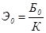
где К - рабочая концентрация эмульсии (см. пп. 5.24, 5.35, 5.45 Технических указаний).
6.4. Влажность минеральных материалов перед их смешением с эмульсией назначают в пределах 3 - 5 %. Эта влажность должна обеспечить равномерное распределение эмульгированного битума в смеси. Больший процент влажности назначают для смесей, содержащих большее количество частиц мельче 0,071 мм.
Приготовляют три эмульсионно-минеральные смеси с оптимальным количеством эмульсии и различным количеством воды (3, 4 и 5 %), соблюдая следующий порядок приготовления смесей. Равномерно перемешивают взятые в нужном соотношении щебень (гравий), песок и минеральный порошок, увлажняют и снова перемешивают, добавляют известь (1,5 - 2 %), если это требуется, и всю смесь тщательно, перемешивают; затем добавляют расчетное количество эмульсии и перемешивают до получения однородной массы. Для приготовления смесей рекомендуется использовать лабораторные мешалки. Допускается приготовлять смеси вручную.
6.6. Образцы испытывают через 14 сут хранения на воздухе в комнатных условиях при температуре 18 - 22°С. Из трех смесей выбирают ту, свойства образцов из которой соответствуют требованиям табл. 17
Таблица 17
Требования к свойствам образцов из эмульсионно-минеральных смесей.
|
Норма для образцов из смесей |
||
|
плотных |
пористых |
|
|
Водонасыщение в вакууме, % по объему, не более |
4,5 |
6,5 |
|
Набухание, % по объему, не более |
1,5 |
2 |
|
Предел прочности при сжатии, кгс/см2, при 20°С, не менее |
16 |
12 |
|
Коэффициент водоустойчивости, не менее |
0,8 |
0,75 |
|
Коэффициент длительной водоустойчивости, не менее |
0,7 |
- |
Примечания 1. К гравийным смесям требования снижаются на 15 %. 2. Требования к свойствам образцов из смесей, приготовляемых смешением на дороге, снижаются на 20 %. 3. Перед испытанием на сжатие образцы термостатируют в воздушной среде в течение 2 ч при температуре 20°С. 4 Водонасыщение определяют после 30 мин выдерживания образцов в вакуумприборе при остаточном давлении 10 - 15 мм.рт.ст. и 30 мин. в том же сосуде при нормальном давлении 5. Длительному водонасыщению (15 сут.) подвергают образцы на 14-е сут. после их изготовления с предварительным насыщением водой в вакууме в течение 30 мин. 6. Коэффициент водоустойчивости для смесей на обратных эмульсиях должен быть не менее 0,9; набухание - не более 0,8 7 Требования к грунтам, укрепленным битумными эмульсиями, см. СН 25-74
6.7. При подборе составов смесей, обрабатываемых двумя вяжущими, определяют количество битума (эмульсии), содержание воды и цемента.
6.8. Оптимальное количество битума определяют по максимальной прочности образцов из смесей, приготовленных горячим способом. Для этого приготовляют несколько смесей выбранного зернового состава, содержащих различное количество битума (в пределах, рекомендуемых п. 5.46). Битум применяют тот же, что и для приготовления эмульсии. Из горячих смесей на гидравлическом прессе изготовляют по три образца под на грузкой 400 кгс/см2.
Температуру нагрева минеральных материалов и битума при приготовлении смеси, а также температуру смеси для образцов следует принимать в соответствии с табл. 1 ГОСТ 12801-71. На следующие сутки определяют прочность образцов при сжатии при температуре 20°С. За оптимальное принимают то содержание битума в смеси, которому соответствует максимальная прочность образцов.
6.9. Оптимальное количество эмульсии рассчитывают по формуле (19). Рабочую концентрацию эмульсии принимают по пп. 5.45 и 5.63.
6.10. Для определения содержания цемента и воды приготовляют две - три смеси с оптимальным количеством эмульсии и различным содержанием цемента (пп. 5.48 и 5.64) и воды. Соблюдают следующий порядок приготовления смеси. Взвешивают воздушно-сухие минеральные материалы, увлажняют их 3 - 5 % воды (большее количество воды для смесей с большим содержанием мелких частиц), добавляют необходимое количество цемента и перемешивают. Затем тщательно перемешивают с оптимальным количеством эмульсии. Для приготовления смесей рекомендуется использовать лабораторные мешалки.
6.11. Из свежеприготовленной смеси на гидравлическом прессе формуют 12 образцов под нагрузкой 400 кгс/см2 из плотных смесей и под нагрузкой 200 кгс/см2 из смесей, предназначаемых для устройства оснований. Образцы хранят в плотно закрывающейся эмалированной кастрюле или ведре, под крышку которых подкладывают влажную ткань. Показатели физико-механических свойств образцов на 28-е сут. должны отвечать требованиям табл. 18.
Таблица 18
Требования к свойствам образцов из смесей, обработанных двумя вяжущими - битумной эмульсией и цементом1
|
Нормы для образцов |
||
|
Покрытие |
Основание |
|
|
Водонасыщение в вакууме, % по объему, не более |
7 |
|
|
Водонасыщение в спокойной воде, % по объему, не более |
- |
3 |
|
Набухание, % по объему, не более |
1,5 |
1,5 |
|
Пределы прочности при сжатии, кгс/см2, при температуре 20°С, не менее |
20 - 35 12 |
25 - 40 |
|
Коэффициент водоустойчивости, не менее |
0,85 |
0,8 |
|
Коэффициент морозоустойчивости при предварительном водонасыщении в вакууме |
0,6 |
- |
|
Коэффициент морозоустойчивости при предварительном водонасыщении в спокойной воде |
- |
0,8 |
1 Требования к грунтам, крепленным битумными эмульсиями совместно с цементом, см. СН 25-74.
6.12. Предел прочности при сжатии определяют при скорости деформирования образца 3 мм/мин. Перед испытанием образец в течение 2 ч термостатируют на воздухе при температуре +20°С.
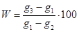
где g1 - масса сухого образца, взвешенного в воздухе, г; g2 - масса того же образца, взвешенного в воде, г; g3 - масса насыщенного водой образца, взвешенного на воздухе, г.
6.15. Набухание образца вычисляют (в процентах от первоначального объема) по формуле
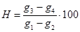
где g4 - масса образца в воде после водонасыщения.
6.16. Коэффициент водоустойчивости вычисляют как отношение прочности образца после водонасыщения к прочности сухого образца.
6.17. Переменному замораживанию и оттаиванию подвергают образцы в 28-суточном возрасте, предварительно насыщенные водой в соответствии с пп. 6.13 и 6.14. Под одним циклом понимают выдерживание образца в течение 4 ч при температуре -15°С с последующим оттаиванием в воде в течение 4 ч.
Морозоустойчивость оценивают коэффициентом, который вычисляют как отношение прочности образца после 25 циклов замораживания - оттаивания к прочности образца при 20°С в 28-суточном возрасте.
6.18. При производстве работ контролируют: качество приготовления смесей, устройство конструктивного слоя, качество готового слоя.
6.19. При приготовлении смеси проверяют качество исходных материалов, точность дозирования и качество перемешивания, а также качество готовой смеси.
6.20. У щебня, гравия, песка 1 раз в смену определяют зерновой состав и влажность.
6.21. В каждой новой партии эмульсии, определяют содержание битума.
6.22. Марку цемента и активность извести принимают по заводскому паспорту или определяют в центральной лаборатории.
6.23. Для контроля качества смеси отбирают пробы готовой смеси (одну - две в смену), из которых изготовляют образцы и испытывают их в соответствии с пп. 6.5, 6.6, 6.11 - 6.17. Показатели свойств образцов должны соответствовать требованиям табл. 17 или 18.
6.24. Качество готового слоя контролируют отбором проб (кернов, вырубок). Пробы отбирают не, ранее чем через 30 сут. после устройства слоя и открытия по нему движения из расчета одна-две Пробы на 1 км.
Образцы, взятые из покрытия, испытывают в переформованном и непереформованном состояниях. Керны (вырубки), взятые из слоя, устроенного с применением эмульсии и цемента, испытывают только в непереформованном состоянии.
Для испытания в непереформованном состоянии от пробы (вырубки, керна) отбирают три образца с ненарушенной структурой по 200 - 400 г каждый. Образцы должны быть без трещин и иметь форму, приближающуюся к кубу или прямоугольному параллелепипеду с размером сторон 5 - 10 см. Для непереформованных образцов определяют объемную массу, водонасыщение и набухание. Оставшуюся часть пробы подогревают при тщательном перемешивании и приготовляют из нее образцы. Температура нагрева смеси и нагрузка на образец при его изготовлении должны быть такими же, как при подборе состава смесей. Для переформованных образцов проводят те же испытания, что при подборе составов (ГОСТ 12801-71).
6.26. Уплотнение покрытия оценивают коэффициентом, который вычисляют как отношение средней объемной массы образцов из покрытия γп (кернов или вырубок) к средней объемной массе образцов, переформованных из тех же кернов или вырубок γобр:
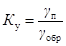
Коэффициент уплотнения должен быть не менее 0,97. Меньшая величина коэффициента свидетельствует о том, что покрытие недостаточно уплотнено. О степени уплотнения конструктивного слоя из материала, укрепленного эмульсией и цементом, судят, сравнивая величины объемной массы вырубок (кернов) и лабораторных образцов, изготовляемых из этих смесей при подборе состава.
7.1. К работе на эмульсионных установках допускаются лица, прошедшие инструктаж по технике безопасности, сдавшие техминимум по конструкции и безопасным методам работы на эмульсионных установках и имеющие удостоверение на право управления соответствующими машинами.
7.2. Эмульсионные установки должны быть обеспечены аптечкой с набором медикаментов и нейтрализующих веществ (сода, борная кислота, слабая уксусная кислота, спирт, лейкопластырь, вата, бинт и, пр.).
7.3. Для обслуживающего персонала устраивают душевые и умывальные с горячей и холодной водой, а также помещения для хранения личной одежды.
7.4. При приготовлении эмульсий и растворов эмульгаторов в закрытых помещениях необходимо устройство приточно-вытяжной вентиляции (с кратностью объема 15 - 20 раз).
7.5. Эмульгаторы, едкий натр и его растворы, а также жидкое стекло хранят в металлических емкостях с плотно закрывающимися крышками, триполифосфат натрия и минеральные эмульгаторы - в бумажных мешках. Соляную кислоту хранят в стеклянных бутылках с притертыми пробками или в другой кислотоупорной таре. Применение резиновых пробок недопустимо. Все перечисленные выше вещества хранят в закрытом помещении.
7.6. К работе со щелочными кислотами, а также с катионными эмульгаторами допускаются лица, обеспеченные хлопчатобумажными костюмами с кислотоупорной пропиткой, резиновыми перчатками, респираторами, защитными очками и резиновыми сапогами.
7.7. В местах растворения едкого натра и приготовления раствора соляной кислоты требуемой концентрации устанавливают ограждение, исключающее разбрызгивание образующегося раствора.
7.8. Бутыль с концентрированной соляной кислотой переносят к месту приготовления раствора вдвоем в плетеной корзине с двумя ручками. Наливают кислоту в мерный сосуд, придерживая бутыль одной рукой за горло, а другой приподнимая бутыль за дно корзины. Не следует низко наклоняться к бутыли, чтобы не вдыхать пары кислоты.
7.9. При приготовлении раствора соляной кислоты требуемой концентрации следует в воду приливать небольшими порциями кислоту.
7.10. Битумохранилище, битумоплавильную установку и все трансмиссии ограждают. Ограждения трансмиссий должны иметь сплошную облицовку. Люки котлов постоянно закрывают решетками с ячейками размером не более 25×25 см и снабжают крышками. Между котлами обеспечивают циркуляцию битума на случаи его вспенивания.
7.11. Во избежание ожогов все трубопроводы битума, пара, горячей воды и эмульгаторов изолируют, краны на них снабжают деревянными или пластмассовыми рукоятками, к ним обеспечивается свободный подход (не менее 0,5 м)
7.12. Оборудование для растворения едкого натра в воде состоит из двух резервуаров и центробежного насоса с электродвигателем. Стальная бочка с едким натром при помощи крана с захватами устанавливается открытым разгрузочным отверстием над горловиной одного из резервуаров и в отверстие через сопло подается струя пара. Растворенный едкий натр стекает в резервуар, где разбавляется водой до требуемой концентрации.
7.13. Перед воронкой диспергатора устанавливают защитное стекло, предупреждающее попадание брызг горячего битума и раствора эмульгатора на оператора.
7.14. Изменять рабочий зазор диспергатора во время его работы воспрещается.
7.15. Подогреваемые емкости заполняют растворами не более чем на 0,8 их объема. К указанным емкостям должна обеспечиваться подача холодной воды. В случае вспенивания раствора эмульгатора в емкость добавляют 20 - 50 л холодной воды и выключают подогрев емкости.
7.16. Битум или деготь, попавший на кожу, смывают соляровым маслом, бензином или керосином, а затем делают примочку из 96 или 72 %-ного этилового спирта. При попадании на кожу лица и рук капель растворов анионных эмульгаторов сначала обмывают эти места кожи большим количеством воды, а при попадании раствора щелочи обрабатывают еще слабым раствором борной или уксусной кислоты. Затем руки моют с мылом и смазывают вазелином
7.17. При работе с катионными эмульгаторами попавшие на кожу водорастворимые ПАВ (ATM) или их растворы следует смыть под сильной струёй воды с нейтральным мылом (не содержащим соду) Водонерастворимые эмульгаторы (диамин, БП-3) сначала снимают керосином или бензином, не втирая их в кожу, затем смывают водой с нейтральным мылом. Соляную кислоту смывают сильной струей воды и на пострадавший участок кожи накладывают примочку из 2 %-ного содового раствора.
7.18. При работе с негашеной известью необходимо надевать рукавицы, защитные очки и респиратор.
7.19. Во время нагревания вяжущих или водного раствора соляной кислоты и едкого натра и растворов эмульгатора рабочие должны находиться с наветренной стороны от места выделения вредных паров.
7.20. Готовые эмульсии прямого и обратного типов не относятся к вредным веществам и при обращении с ними специальных мер предосторожности не требуется. В случае попадания эмульсии на одежду, лицо и руки следует быстро смыть ее холодной водой, а остатки битума или дегтя снять керосином, соляровым маслом, бензином, а затем эти места промыть теплой водой с мылом.
В основу проекта эмульсионной установки положен наиболее сложный технологический вариант приготовления эмульсии с использованием в качестве эмульгатора госсиполовой смолы, отличающейся тем, что, кроме варки мыла, требуется часть эмульгатора вводить в битум. Производительность установки до 25 т/ч.
Основное оборудование эмульсионной установки размещено на площадке размером, 15×30 м в соответствии с технологическим процессом по узлам (см. рисунок).
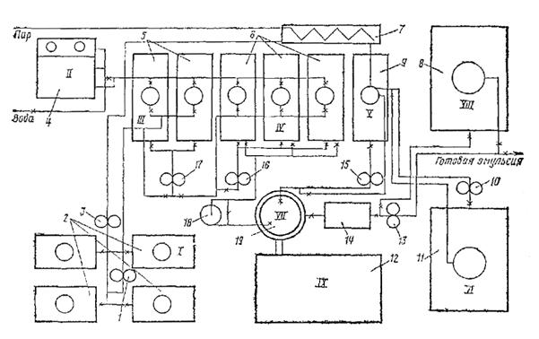
Стационарная эмульсионная установка:
1 - насос для периодической перекачки госсиполовой смолы; 2 - емкости для хранения госсиполовой смолы; 3 - насос для постоянной подачи госсиполовой смолы в битум; 4 - бак для выпаривания и приготовления раствора едкого натра; 5 - котлы для варки мыла; 6 - котлы для приготовления водного раствора эмульгатора; 7 - испаритель для госсиполовой смолы; 8 - емкость для хранения эмульсии; 9 - котел для подготовки (смешение госсиполовой смолы с битумом); 10 - насос для подачи битума; 11 - битумохранилище; 12 - кабина управления; 13 - насос для откачки эмульсии; 14 - промежуточный бак; 15 - насос для перемешивания битума; 16 - насос для перемешивания водного раствора эмульгатора; 17 - насос для перемешивания мыла; 18 - насос для подачи раствора эмульгатора; 19 - диспергатор
Узел I - для приема и хранения госсиполовой смолы состоит из четырех заглубленных в землю металлических цистерн объемом по 25 м3 каждая. Они связаны между собой системой трубопроводов, к которым подключены два насоса: один - большей производительности, служит для периодической подачи госсиполовой смолы при варке мыла, другой - малой производительности, непрерывно подает госсиполовую смолу для растворения, в битуме. Цистерны оборудованы паровыми регистрами для разогрева госсиполовой смолы.
Узел II - для выпаривания едкого натра из тары и приготовления раствора необходимой концентрации включает два бака, смонтированные один над другим. В верхнем баке выпаривают едкий натр из металлических бочек и получают концентрированный раствор, в нижнем - приготовляют раствор рабочей концентрации.
Узел III - для варки мыла состоит из двух металлических цистерн (котлов), объемом по 10 м3 каждая, шестеренчатого насоса марки Д-171, системы трубопроводов и запорных вентилей. Котлы оборудованы эффективной системой пароподогрева, необходимого для варки мыла.
Узел IV - для приготовления водного раствора мыла рабочей концентрации состоит из трех металлических цистерн (объемом 10 м3 каждая), шестеренчатого насоса Д-171, системы трубопроводов и запорных вентилей. Цистерны оборудованы паровыми регистрами для подогрева водного раствора эмульгатора до рабочей температуры.
Узел V - для растворения госсиполовой смолы в битуме состоит из металлической цистерны объемом 10 м3, парового подогревателя госсиполовой смолы, шестеренчатого насоса, системы трубопроводов и запорных вентилей. Битум и госсиполовую смолу подают в цистерну непрерывно в требуемом соотношении автоматически с помощью контрольных приборов расхода.
Узел VI - для подготовки битума включает емкость битума и шестеренчатый насос, объединенные трубопроводы с запорными вентилями. Емкость снабжена паровым подогревом для поддержания заданной температуры битума.
Узел VII - для приготовления эмульсии имеет центробежный насос, промежуточный бак и шестеренчатый насос.
Узел VIII - для накопления, хранения и отгрузки готовой эмульсии состоит из металлической цистерны объемом 50 м3, которая трубопроводами с запорными вентилями связана с насосом узла VII. Эмульсию заливают в транспортные средства через стояк (вертикально установленный трубопровод), заканчивающийся гибким шлангом.
Узел IX - кабина управления, в которой смонтированы приборы пуска и защиты всех электродвигателей, пульт и щит управления с приборами автоматизации и дистанционного управления. Здесь же находится рабочее место старшего оператора.
Все цистерны узлов III, IV и V установлены на фундаментах.
I. Полустационарная эмульсионная установка (рис. 1) рассчитана на полную автономность работы без привязки технологического процесса к другим видам производства. Производительность установки равна 6 т/ч. Обслуживается двумя операторами. Электроэнергией обеспечивается от передвижной электростанции. Битумом снабжается с прирельсовых баз, водой - от ближайшего источника. Установка имеет четыре основных узла.
Узел I состоит из двух металлических емкостей объемом 26 м3 каждая для хранения готовой эмульсии. На эти емкости через промежуточную раму установлены три одинаковые цистерны объемом по 5,3 м3. Две из них служат для приготовления и хранения водного раствора эмульгатора, третья - для хранения смыленного эмульгатора (мыла). Все емкости связаны трубопроводами с соответствующими технологическими узлами.
Рис. 1. Полустационарная эмульсионная установка:
1 - емкость для хранения эмульсии; 2 - емкости для водного раствора эмульгатора; 3 - емкость для мыла; 4 - водяной насос; 5 - котел для разогрева воды; 6 - битумные котлы; 7 - насос для подачи битума; 8 - емкость для ПАВ; 9 - насос для подачи ПАВ; 10 - воздуходувка; 11 - котел-мешалка; 12 - насос, обслуживающий мешалку; 13 - топливный насос; 14 - емкость для эмульгатора; 13 - емкость для топлива; 16 - баки для приготовления раствора едкого натра; 17 - кран-укосина; 18 - насос для эмульсии; 19 - промежуточный бак; 20 - диспергатор
Узел II включает три полустационарных котла объемом по 15 м3 (водогрейный и два битумоварочных с приставными топками), водяной центробежный насос, битумный насос, воздушный вентилятор, воздухо-, газопровод и котел-мешалку. Водогрейный котел обеспечивает горячей водой весь технологический процесс. Битумоварочные котлы служат для разогрева, выпаривания и доведения до рабочей температуры битума. Загрузка котлов, подача готового битума по трубопроводам осуществляется насосом. При необходимости в битум вводят ПАВ. Для хранения ПАВ имеется отдельная емкость и насос для подачи их в дозатор. В котле-мешалке варят мыло. Объем котла-мешалки 3 - 5 м3. Она оборудована перемешивающим устройством с механическим приводом.
Узел III состоит из двух металлических баков, крана-укосины, трех резервуаров объемом до 5,3 м3, шестеренчатого и топливного насосов. В баках приготовляют водный раствор едкого натра заданной концентрации. Щелочь в бак загружают с помощью крана-укосины, снабженного электротельфером. Один резервуар служит для хранения технологического запаса эмульгатора, в двух других хранится запас топлива.
Узел IV включает кабину оператора, пульт управления, диспергатор, стабилизатор напора, насос и промежуточный бак. Загрузка диспергатора осуществляется через два крана. Внутри кабины установлен щит дистанционного управления технологическим процессом. На этом щите смонтированы пусковые приборы и контрольно-сигнальная аппаратура. Готовая эмульсия из диспергатора поступает в промежуточный бак. По мере его наполнения эмульсию из бака перекачивают насосом в емкости для хранения. Загрузка эмульсии в транспортные средства производится тем же насосом.
Трубопроводы связывают отдельные элементы установки в единое целое производство. Трубопроводы, по которым подается битум, эмульгатор и водный раствор эмульгатора, снабжены обогревательной рубашкой с циркуляцией горячей воды.
Рис. 2. Полустационарная эмульсионная установка (конструкции ПКБ Главстроймеханизации):
1 - битумные котлы; 2 - емкости для хранения эмульсии; 3 - водоумягчительное оборудование; 4 - кран; 5 - емкости для раствора едкого натра; 6 - уравнительные баки; 7 - диспергатор; 8 - контрольный бак; 9 - дозатор воды; 10 - мешалка для раствора эмульгатора; 11 - дозатор раствора едкого натра; 13 - дозатор мыла; 13 - дозатор эмульгатора; 14 - дозатор раствора едкого натра; 15 - мыловарочные котлы; 16 - насос; 17 - емкости для раствора эмульгатора.
Для достижения необходимой мобильности основное оборудование устанавливается на рамах и опорах. Последние предусматривают монтаж оборудования на любой спланированной и уплотненной площадке с точной фиксацией положения всего оборудования Трубопроводы и электропроводка размещены узлами и обеспечивают легкость монтажа и подключения к общим коммуникациям.
Погрузочно-разгрузочные работы при демонтаже и монтаже оборудования осуществляют краном, а перевозку выполняют трейлером и автомобилями.
II. Типовая полустационарная эмульсионная установка (рис. 2) производительностью 6 т/ч разработана ПКБ Главстроймеханизации Минтрансстроя СССР.
Для подготовки битума на эмульсионной установке использована батарея общим объемом 45 м3, состоящая из трех битумоварочных котлов с перемешивающими устройствами и приставными топками.
Оборудование для растворения едкого натра в воде состоит из двух резервуаров и центробежного насоса с электродвигателем. Стальная бочка с едким натром при помощи крана с захватами устанавливается открытым разгрузочным отверстием под горловиной одного из резервуаров и в отверстие через сопло подается струя пара. Растворенный едкий натр стекает в резервуар, где разбавляется водой до требуемой концентрации. Раствор перемешивается с помощью насоса, обеспечивающего непрерывную циркуляцию.
Варка мыла осуществляется в котлах, возле которых установлены объемные дозаторы для воды, эмульгатора и раствора едкого натра. Котел состоит из цилиндрического корпуса, внутри которого расположен вертикальный вал с перемешивающими лопастями и паровой змеевик. Снаружи корпус имеет теплоизоляцию из минеральной ваты и стального кожуха. Под днищем котла установлен электродвигатель с червячным редуктором, вращающий лопастный вал со скоростью 30 об/мин. Приготовленное мыло вытекает из сливного патрубка.
Водный раствор эмульгатора приготовляется в котлах для варки мыла или в специальной лопастной мешалке, имеющей дозаторы для раствора эмульгатора, раствора едкого натра и воды. Приготовленный водный раствор эмульгатора перекачивается насосом в резервуары для хранения и подогрева до рабочей температуры, оборудованные перемешивающими устройствами и паровыми змеевиками.
Водоумягчительное оборудование включает в себя катионитовый фильтр, солерастворитель, бак для хранения запаса умягченной воды и центробежный насос. Для работы оборудования требуется сульфированный уголь, поваренная соль и кварцевый песок. Сульфированный уголь периодически (через 10 - 12 ч работы) подвергается регенерации.
Для хранения приготовленной эмульсии на установке имеются шесть стальных емкостей по 20 м3, одна из которых заглублена в землю на 2,6 м с тем, чтобы эмульсия из диспергатора поступала в нее самотеком. Остальные емкости размещаются на поверхности земли и заполняются эмульсией перекачиваемой насосом из заглубленной емкости.
При размещении установки на АБЗ из всего комплекта приобретается только следующее оборудование диспергатор, котлы для варки мыла, резервуары для растворения едкого натра, резервуары для водного раствора эмульгатора, резервуары для хранения эмульсии. Водоумягчительное оборудование используется при отсутствии на месте производства эмульсии мягкой воды
Многодисковый диспергатор ЭМ-25. Принцип действия многодискового диспергатора состоит в том, что битум и водный раствор эмульгатора продавливаются через многочисленные отверстия в системе подвижных и неподвижных дисков. Образующиеся в результате многократных срезов мельчайшие битумные капли стабилизируются в растворе эмульгатора.
Техническая характеристика диспергатора ЭМ-25:
Производительность, т/ч......................................................................................... 25
Скорость вращения ротора, об/мин................................................................... 1460
Наибольший диаметр ротора, мм........................................................................ 261
Наименьший диаметр ротора, мм........................................................................ 128
Окружная скорость по среднему диаметру ротора, м/с.................................... 14,9
Число неподвижных дисков, шт.............................................................................. 6
Число вращающихся дисков, шт.............................................................................. 4
Тип двигателя....................................................................................................... А-62
Мощность электродвигателя, кВт......................................................................... 14
Габаритные размеры, мм:
длина.................................................................................................................. 635
ширина............................................................................................................... 620
высота.............................................................................................................. 1585
Масса без электродвигателя и рамы, кг.............................................................. 365
Общая масса, кг..................................................................................................... 520
Диспергатор ЭМ-25 (рис. 1) представляет собой агрегат сборного типа, состоящий из следующих узлов: рамы, рабочего органа, корпуса, коллектора.
Рама сварена из отдельных швеллеров, стоек и поперечин. На верхней части рамы на плите монтируется один из основных узлов диспергатора - опорный узел. Два поперечных швеллера, находящиеся внутри рамы, служат опорой для электродвигателя - привода диспергатора.
Рабочий орган диспергатора состоит из вала и двух рабочих секций, разделенных между собой сгонным кольцом и крыльчаткой. Верхняя и нижняя рабочие секции однотипны и каждая состоит из крыльчатки, двух подвижных и трех неподвижных дисков. Подвижные диски разделены между собой внутренними кольцами, неподвижные диски - наружными распорными кольцами. Верхняя рабочая секция опирается на промежуточную крыльчатку. Крыльчатки, подвижные диски, внутренние распорные кольца через шпонку соединяются с валом рабочего органа, который опирается на два радиально - упорных подшипника, установленные в опорном узле. Все подвижные элементы рабочего органа собираются на валу и крепятся болтом с накладкой. Наружные распорные кольца, неподвижные диски, сгонное кольцо через штифт крепятся к корпусу диспергатора.
Корпус диспергатора предназначен для объединения в единое целое основных элементов диспергатора (вала, рабочего органа, коллектора и др.). Корпус представляет собой сварную конструкцию, состоящую из внутренней части, в которой размещается рабочий орган диспергатора, дна с сальниковой коробкой, ребер, жестко соединяющих основание с опорным узлом, паровой рубашки с верхним кольцом.
В верхней части корпус прикрывается крышкой, служащей основанием коллектора. Она крепится болтами к кольцу паровой рубашки. В нижней части корпуса находится отверстие с отводным патрубком для выхода готовой эмульсии. Пар в паровую рубашку подводится через верхний патрубок, а отводится через нижний.
Коллектор представляет собой сварную конструкцию и предназначен для направления в диспергатор битума и водного раствора эмульгатора, грубой очистки и направления их в рабочую полость диспергатора. Коллектор состоит из двух подводящих патрубков, корпуса и нижней плиты (крышки диспергатора). Во внутренней части корпуса коллектора имеется рамка с металлической сеткой. Привод вращения вала диспергатора осуществляется от электродвигателя типа А-62. Через муфту двигатель крепится болтами к двум поперечным швеллерам рамы. Диспергатор устанавливается на бетонное основание и закрепляется анкерными болтами.
На рис. 2 представлена схема подключения диспергатора. На входных патрубках диспергатора устанавливаются два трехходовых регулировочных крана. К регулировочному крану битум из котла шестеренчатым насосом подается по трубопроводу. Излишки битума, не попавшие в диспергатор, отводятся по сливному трубопроводу обратно в котел. Одновременно водный раствор эмульгатора из емкости центробежным насосом по трубопроводу направляется к другому регулировочному крану. Готовая эмульсия по трубопроводу поступает в хранилище.
Рис. 1. Схема устройства многодискового диспергатора ЭМ-25:
1 - выходные патрубки; 2 - фильтр; 3 - крышка; 4 - корпус; 5 - паровая рубашка; 6 - неподвижные диски; 7 - вращающиеся диски; 8 - вал диспергатора; 9 - сальник; 10 - крыльчатка; 11 - сгонное кольцо; 12 - распорные кольца; 13 - выходной патрубок; 14 - подшипниковая коробка; 15 - соединительная муфта; 16 - рама; 17 - электродвигатель.
Рис. 2. Схема подключения многодискового диспергатора ЭМ-25:
1 - битумный котел; 2 - проходной вентиль; 3 - битумный насос; 4 - емкость с раствором эмульгатора; 5 - проходной вентиль; 6 - центробежный насос; 7, 8 - трубопроводы водного раствора эмульгатора и битума; 9, 10 - регулировочные краны; 11 - диспергатор; 12 - трубопровод для эмульсии; 13 - хранилище эмульсии.
Многощелевой диспергатор. В этой машине эмульсия образуется в узких зазорах между поверхностями неподвижного и вращающегося рабочих органов. В результате трения эмульгируемых материалов о поверхности рабочих органов капли битума, распределенные в растворе эмульгатора, растягиваются в нити, которые по достижении определенной длины распадаются на более мелкие капельки.
Многощелевой диспергатор роторного типа (рис. 3) состоит из корпуса, ротора, статора и вала со шкивом клиноременной передачи. Ротор имеет несколько концентричных выступов с коническими поверхностями, статор - несколько концентричных впадин также с коническими поверхностями. Выступы ротора входят во впадины статора, образуя рабочие щели между соответствующими коническими поверхностями.
Рис. 3. Схема устройства многощелевого диспергатора:
1 - корпус; 2 - ротор; 3 - статор; 4 - патрубок для подвода пара; 5 - стопорное устройство; 6 - указательное кольцо; 7 - штурвал; 8 - регулировочный механизм; 9 - загрузочная воронка; 10 - распределитель; 11 - вал; 12 - сливной патрубок
Для изменения величины зазоров (ширины щелей) между ротором и статором предусмотрен регулировочный механизм. При повороте штурвала вал с ротором перемещается в осевом направлении и при этом изменяется ширина зазоров. Величина зазоров выбирается в зависимости от вида используемого эмульгатора и устанавливается по шкале, нанесенной на указательном кольце. Фиксирование зазоров производится стопорным устройством.
Битум и водный раствор эмульгатора поступает через приемную воронку в верхнюю камеру, где они с помощью распределителя предварительно перемешиваются и распределяются по поверхности статора и затем через отверстия в статоре попадают в рабочие зазоры. Здесь происходит измельчение и эмульгирование битума.
Готовая эмульсия из рабочих зазоров по радиальным отверстиям ротора поступает в нижнюю камеру машины и далее через сливной патрубок выводится наружу.
Разогрев ротора и статора перед, началом работы осуществляется паром, который подается в машину через патрубок в течение 3 - 5 мин. Разогревать рабочие органы можно также горячим раствором эмульгатора, подаваемым через воронку. Производительность диспергатора - 5 - 7 т/ч, мощность электродвигателя - 7,5 кВт.
Акустическая установка. К машинам периодического действия относится полустационарная акустическая установка производительностью 1 т/ч. состоящая из бака с мешалкой, в котором растворяется эмульгатор, расходного бака для водного раствора эмульгатора, эмульсионного бака с дозатором битума, гидродинамического вибратора и насоса (рис. 4).
Гидродинамический вибратор помещен внутри эмульсионного бака и соединен трубопроводом с насосом. Вибратор состоит из сопла и пластины, один конец которой заострен, а другой жестко закреплен. Струя жидкости, выходящая из сопла под давлением (5 - 6 атм.), ударяя о заостренный конец пластины, вызывает ее вибрацию. Возникающие при этом в обрабатываемых жидкостях звуковые волны и сопутствующие им явления вызывают эмульгирование битума.
Рис. 4. Схема акустической эмульсионной установки:
1 - бак с мешалкой для приготовления водного раствора эмульгатора; 2 - расходный бак для раствора эмульгатора; 3 - вихревой насос; 4 - дозатор битума; 5 - эмульсионный бак; 6 - гидродинамический вибратор
Рис. 5. Мешалка для приготовления обратных эмульсий:
1 - корпус; 2 - неподвижная лопасть; 3 - подвижная лопасть; 4 - шестеренчатая передача; 5 - ременная передача; 6 - электродвигатель; 7 - рама; 8 - сливной патрубок
Лопастная мешалка. Эмульсии обратного типа приготовляют в лопастных мешалках с вертикальным валом при скорости вращения лопастей 60 - 80 об/мин. (рис. 5). Мешалки оборудуются паровой рубашкой или электрообогревателем, устройством поплавкового типа для дозирования эмульгируемых материалов. При полезном объеме мешалки в 750 л для работы требуется электродвигатель мощностью 2,8 кВт.
Установка для приготовления эмульсий обратного типа (рис. 6) производительностью 1 т/ч помимо мешалки имеет котлы для приготовления и разогрева вяжущего, резервуары с перемешивающими устройствами для приготовления водного раствора эмульгатора (едкого натра и поваренной соли), резервуары для готовой эмульсии, насосы.
Рис. 6. Установка для приготовления дегтевых и сланцевых обратных эмульсий:
1 - котлы для дегтя; 2 - мешалка; 3 - цистерна с керосиновым контактом; 4 - емкости для раствора едкого натра; 5 - насос; 6 - ёмкости для эмульсии; 7 - автогудронатор.
Для приготовления битумных паст и смешивания их с минеральными материалами используют мешалки принудительного перемешивания со скоростью вращения лопастей 30 - 120 об/мин. При больших объемах работ рационально использовать асфальтобетонные смесители типа Д-125, Д-225, Д-325, Д-323А, Д-597. Для приготовления паст и смесей необходимо частично переоборудовать смеситель, установив на нем дозировочный бачок для воды и распределяющие устройства (рис. 1 и 2)
Рис. 1. Технологическая схема приготовления битумных паст и холодных смесей на смесителе Д-225:
1 - питатель; 2 - элеватор для песка и щебня; 3 - загрузочная коробка; 4 - сушильный барабан; 5 - грохот на три фракции; 6 - холодный бункер; 7 - кран; 8 - насос; 9 - бак для подогрева воды; 10 - дозировочный бачок; 11 - распределитель воды; 12 - бункер весового дозатора; 13 - весовое дозировочное устройство для минеральных материалов; 14 - битумный дозатор; 15 - спускные лотки для отходов; 16 - лопастная мешалка; 17 - элеватор для минерального порошка (эмульгатора); 18 - циклоны; 19 - лоток циклона; 20 - вентилятор; 21 - шибер; 22 - дымовая труба.
Рис. 2. Усовершенствованная технологическая схема приготовления битумных паст и холодных смесей на смесителе Д-225:
1 - питатель; 2 - элеватор для холодного материала; 3 - краны; 4 - дозировочный бачок для воды; 5 - дозировочный бачок для паст; 6 - диафрагменные насосы; 7 - труба для подачи воды и пасты в мешалку; 8 - спускной лоток для пасты; 9 - запасная емкость; 10 - вибрационный грохот; 11 - бункер на четыре отсека для щебня разных фракций, песка и минерального порошка; 12 - спускной лоток; 13 - элеватор для подачи минерального порошка (эмульгатора); 14 - весовой бункер для каменных материалов; 15 - весовой шкаф дозаторов каменных материалов; 16 - битумная весовая бадья; 17 - весовой шкаф битумного дозатора; 18 - наливная битумная труба; 19 - битумный насос; 20 - подводящая битумная труба
Пасты и песчаные смеси можно приготовлять также в штукатурно-смесительных агрегатах с растворомешалками типа С-50, С-335, С-220, С-289; при малых объемах работ растворо- или бетономешалки типа C-351, С-337, С-209, С-371, С-356.
Для перекачивания и распределения битумных паст используют диафрагмовые и бездиафрагмовые растворонасосы типа С-251, С-253, С-317, C-210A. Для перекачивания шламов применяют бездиафрагмовые насосы с шаровыми клапанами или пробковыми клапанами принудительного действия (ШМ-1 и ШМСМ-1).
СОДЕРЖАНИЕ